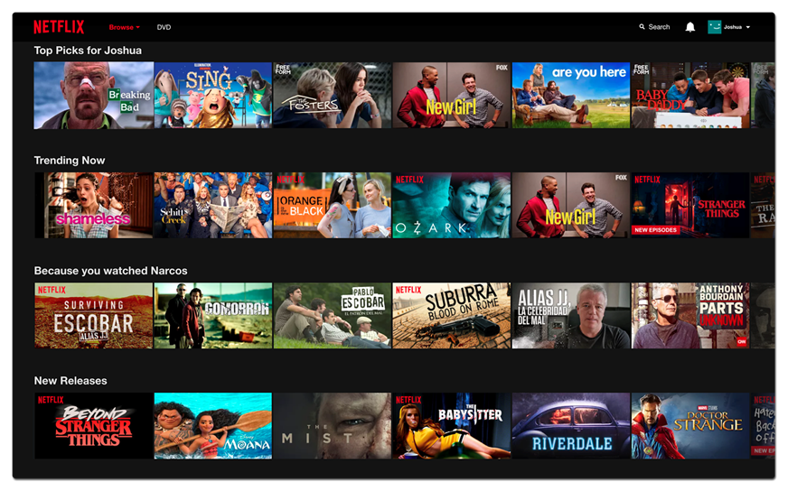
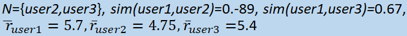
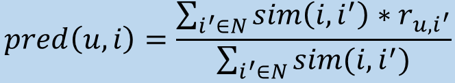
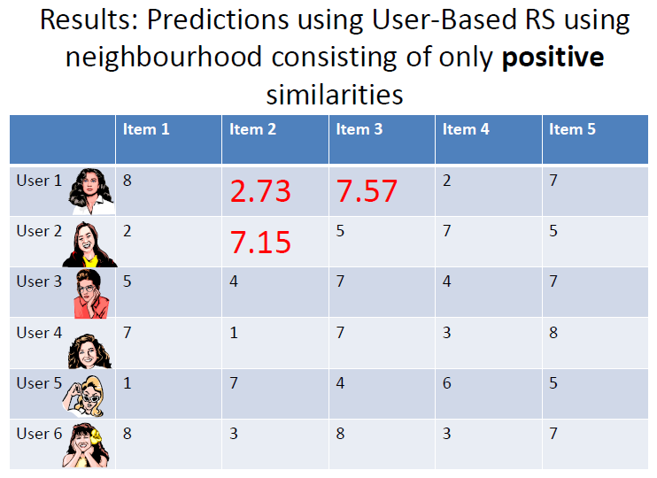

Social Computing Techniques (COMP3208) Notes Document
Introductory Lecture 4
Module Overview 4
Coursework 5
Additional Links and Resources 6
Recommender Systems 7
Where to Find What 7
What is Social Computing? 7
What is Crowdsourcing? 8
Crowdsourcing Examples 9
CAPTCHA 9
NoiseTube 9
Amazon Mechanical Turk 10
Some other examples 10
Recommender Systems 11
Online Advertising Auctions 11
Summary 13
Past & Present 13
Terminology 13
History of Social Computing 13
1714 - Longitude Prize 13
1791 - Gaspard de Prony’s Logarithmic Tables 14
Wisdom of the Crowds 14
1906 - Sir Francis Galton 15
1984 - Space Shuttle Challenger Disaster 16
Early Social Computing Systems 17
Commercialisation 20
Web 2.0 22
Rise of Crowdsourcing 23
Crowdsourcing for Social Good 24
Crowdsourcing and Machine Learning 25
Why Do We Still Use Social Computing? 25
Features of Computing Systems 27
Recommender Systems 28
Learning Outcomes 28
Resources 28
What are Recommender Systems? 29
Examples of Recommender Systems 29
Why use Recommender Systems? 32
Potential Issues 33
Paradigms of Recommender Systems 33
Content-based 33
Knowledge-based 34
Collaborative Filtering 35
Hybrid 36
Pros and Cons of Different Approaches 36
Similarity Coefficients 37
“Cleaning” Features 37
Calculating Similarity 39
Exercise 39
Self-Test Question Answers 40
Question 1 40
Question 2 40
Question 3 41
User-Based Collaborative Filtering 41
Similarity Measure (for Ratings) 42
Pearson Coefficient Example 43
Neighbourhood Selection 44
Prediction 44
Improving Prediction 45
Produce Recommendation 46
Item-Based Collaborative Filtering 46
Similarity Measure (for Ratings) 47
Adjusted Cosine Similarity Example 48
Prediction 49
Exercise 2 49
Alternative Approaches 51
Simple Approach: Slope One 51
Types of Ratings 52
Example: Items Bought Together 52
Evaluating Recommender Systems 53
Correct and Incorrect Classifications 54
Metrics 55
Precision 55
Recall 55
Accuracy 55
Rank Score 56
Error Measures 56
Online Auctions 57
Where Are Auctions Used and Why? 57
Sponsored Search 57
Display Advertising 58
Why Use Auctions? 59
Auction Design 59
Auction Types 60
English Auction 60
Dutch Auction 61
Sealed-Bid First Price Auction 61
Sealed-Bid Second Price Auction (Vickery Auction) 62
Dominant Strategy 62
Formal Model and Utility 63
Computing Expected Utilities 64
Reputation Systems 65
Trust Issues… 65
Terminology 65
Cherries and Lemons 65
The Lemon Problem 66
Moral Hazard 66
Trust on the Web 66
The Solution? 67
Reputation vs. Recommender Systems 67
Design Considerations 67
Existing Systems 67
Reputation Value 69
Measuring Confidence 69
Probabilistic Approach 70
Using the Beta Distribution 70
Evaluating Reputation Systems 72
Issues 72
Financial Incentives 74
Experimental Design 75
Human Computation 75
Modern Recommendation Systems 75
Incentives in Crowd 75
Rank Aggregation 75
Experts Crowdsourcing 75
Revision Lectures 75
tl;dr 75
Introductory Lecture 75
Past & Present 76
Recommender Systems 79
Online Auctions 90
Reputation Systems 92
Additional Lectures 96
Introduction to Coursework 96
Assignments 96
Useful Resources 97
Forming Groups (of 2 or 3) 97
Task Datasets 97
Submitting Computed Ratings 98
Written Report 100
Academic Integrity 100
Coursework Surgery Sessions 101
Coursework “Surgery” 1 101
Coursework “Surgery” 2 101
Coursework “Surgery” 3 101
Coursework “Surgery” 4 101
Guest Lecture: Davide Zilli from Mind Foundry 101
Guest Lecture: Mikhail Fain from Cookpad 101
Introductory Lecture
Module Overview
The primary module aim is to investigate how online collective intelligence and “crowd
wisdom” is used in various business and research areas, and the underlying technologies/algorithms used in practice.
Main topics:
-
Crowdsourcing
-
Recommender Systems
-
Reputation Systems
-
Experimental Design and Web Analytics
-
Online Advertising Auctions
-
Rank Aggregation
-
There’ll also be some guest lectures from
industry/academia discussing applications; confirmed for
2020-21 (if you’re reading this later, RIP):
-
Mikhail Fain (Cookpad: Food tech company)
-
Davide Zilli (Mind Foundry: Oxford’s spin-off
company)
Learning outcomes:
-
demonstrate knowledge of social computing technology
applications, e.g. crowdsourcing, recommender systems, online
auctions
-
describe the most important techniques and issues in designing, building
and modelling social computing systems
-
set up social computing experiments and analyse the results with a scientific approach
-
tl;dr social computing
There is a strong applied component to the module (i.e. learning how shit is
actually used). Note that it’s not about social networks (that’s for COMP6250: Social Media and Network
Science).
Assessment:
-
40% coursework
-
60% final exam (hence I’m making these notes, bruh I’m not
getting paid for this)
Lecturers:
-
Dr. Sarah Hewitt
-
Dr. Stuart Middleton
-
Dr. Jie Zhang
Coursework
-
Done in pairs (email sem03@soton.ac.uk your team choices,
subject 'COMP3208 coursework teams')
-
Aim is to design, implement, and evaluate a recommender system (to predict ratings for a combination of user and
items for which no ratings are provided)
-
Medium size dataset will be provided consisting of user ratings for items
(~20 million entries)
Additional Links and Resources
Recommender Systems
-
relevant chapters: 1, 2, 4 and 7 (and possibly 3 for the
coursework)
Where to Find What
-
MS Teams: live lectures, interactive sessions,
Q&As
-
Module page: general module info, schedule, slides, other
materials
-
Blackboard: self-test exercises, final assessment
What is Social Computing?
It’s a widely used concept with no single definition, but
according to HP Research Labs:
"Social Computing Research focuses on methods for harvesting the collective intelligence of groups of people in order to realize greater value from the interaction between users and information”
(basically, harvest info from users to learn about them and
their interactions with #content)
ECS has done various research in social computing, e.g.
enhancing crowdsourcing techniques for sustainable disaster
relief; here’s a flex:
What is Crowdsourcing?
Dictionary definition of crowdsource: “obtain (information or input into a particular task or project)
by enlisting the services of a number of people, either paid or unpaid, typically via the Internet”.
(Basically, get people online to do shit for you)
Topics to be investigated include:
-
What type of problems are suitable for crowdsourcing?
-
How to divide a complex task into many simple tasks that
can be done with no expertise and no/little need for
additional technology?
-
How to design appropriate (e.g. monetary) incentives?
-
How to ensure the quality, e.g. using reputation and/or
voting systems?
Crowdsourcing Examples
CAPTCHA
-
We’ve all done it, we all hate it
-
"Completely Automated Public Turing test to tell
Computers and Humans Apart" - a type of challenge-response test used in computing to determine whether or not the
user’s human
-
Most common type of CAPTCHA (displayed as Version 1.0)
invented in 1997 (oldskool); it requires the user to correctly evaluate and enter a sequence of letters or
numbers perceptible in a distorted image displayed on the
screen
-
As it’s administered by a computer, in contrast to
the standard Turing test that is administered by a human, a
CAPTCHA is sometimes described as a reverse Turing test
-
However it’s received many criticisms, especially from people with
disabilities, but also from other people who feel that their everyday
work and shitposting is slowed down by distorted words that
are difficult to read (it takes the average person ~10
seconds to solve a typical CAPTCHA - you’re too
slow!)
NoiseTube
-
An example of citizen sensing
-
A research project started in 2008 at the Sony Computer
Science Laboratory in Paris in collaboration with Vrije
Universiteit Brussel
-
Goal of the project is to turn smartphones into mobile
noise level meters to enable citizens to measure their exposure to noise in their
everyday environment, and participate in the collective noise mapping of their city or neighborhood (so people can snitch
on your free parties)
-
Software platform that consists of a mobile application
(available for Android and iOS ) and a website (visit
www.noisetube.net and register an account) where users can
submit their noise measurements to visualise and share them
with others
Amazon Mechanical Turk
-
An example of human computation (so Jeff Bezos can make even more money)
-
A crowdsourcing website for businesses to hire remotely located
"crowdworkers" to perform discrete on-demand tasks that computers
are currently unable to do
-
can include anything from conducting simple data validation
and research, to more subjective tasks like survey
participation and content moderation
-
On the Amazon website, “there are still many things
that human beings can do much more effectively than
computers” (but robots will take over someday)
Some other examples
-
Citizen science: e.g. Zooniverse, EteRNA
-
Citizen journalism: e.g. Ushahidi
-
Others: e.g. Red balloon challenge
Recommender Systems

-
A subclass of information filtering system that seeks to predict the "rating" or
"preference" a user would give to an item
-
They are primarily used in commercial applications
-
Collaborative filtering: use collective tastes of many
users to produce personalised predictions about the interests of
individual users
-
e.g. "people who bought these items also
bought.." or "people who listened to these songs
also listened to..." or “people who read these
notes also lost the will to live... ” etc.
-
Sites like Amazon and Netflix use recommender systems for
their content, using item-to-item collaborative filtering,
which scales to massive data sets and produces
“high-quality” (I don’t think
they’re very good tbh) recommendations in real
time
Topics to be investigated include:
-
What are the technologies for collaborative
filtering?
-
How to implement a recommender system using medium size
data sets?
-
How to evaluate and compare the effectiveness of a
recommender system?
Online Advertising Auctions
-
Many websites rely on advertising for their income,
especially those offering free content (RIP GeoCities)
-
These ads are determined through very fast auctions,
where advertisers bid on users the moment they enter a
website. Instead of having a complex algorithm for matching
advertisers to users, an auction-approach is used
-
There are two main types of online advertising:
-
sponsored search/keyword advertising
-
search ads only appear in search engine results. Advertisers select a list of keywords that are relevant
to their company or products, and can bid to have their ad
show when someone searches for those words or phrases
-
in sponsored search, advertisers bid on keywords entered by the user
-
display ads are the banners or text you see on websites that sell space to advertisers. These ads used to be
the result of direct relationships between sites and
advertisers (and in some cases, they still are)
-
In display advertising, advertisers bid based on user profile (determined by tracking users through cookies)
-
Remember, you can never escape the corporate machine
Topics to be investigated include:
-
What type of companies play a role in online
advertising
-
What are the different auctions and how do they work?
-
What are the characteristics of the auctions used in online
advertising, and their advantages and disadvantages
-
How should advertisers bid in the auctions.
-
Who learns the user profiles, and how do they do it?
Summary
-
The module focuses on social computing techniques (duh), with 6 main topics (not including social networks, so get off TikTok and
revise)
-
The common theme is the use of collective intelligence (a.k.a the wisdom of the crowds) for research and business applications
-
Remaining topics to look at:
-
Reputation Systems
-
Experimental Design
-
Rank Aggregation
Past & Present
Terminology
Before diving into the lecture, some useful terms:
-
Collective Intelligence - “intelligence that emerges from the
collaboration, collective efforts, and competition of many
individuals”
-
Social Computing - “methods for building computational systems
that harness collective intelligence”
-
Human Computation - “outsourcing computational steps (microtasks)
that are difficult for machines to humans”
-
Crowdsourcing -“obtaining services, ideas or content from a large
group of people through an open call (typically to an online
community) rather than from traditional employees or
suppliers”
History of Social Computing
1714 - Longitude Prize
-
Back in 1714, the British Government offered, by Act of
Parliament, £20k (over £2m today) for a solution
which could find longitude to within half a degree
(equivalent to 2 minutes of time)
-
A group later known as the Board of Longitude was set up to
assess submissions and offer rewards
-
This was won by John Harrison, who invented the revolutionary marine chronometer
-
The clock in the pic above is displayed in the Science
Museum in London (after lockdown you can go check it out if
you want)
-
So why are we talking about clocks? Because this case is
seen by some as the first example of crowdsourcing
1791 - Gaspard de Prony’s Logarithmic Tables
-
In 1791, de Prony worked on producing logarithmic and trigonometric tables for the French Cadastre, as the French National
Assembly (after the French Revolution) wanted to bring uniformity to measurements and standards used throughout the nation.
-
Inspired by Adam Smith's Wealth of Nations, de Prony divided up labor into three levels, bragging that he "could manufacture logarithms as
easily as one manufactures pins." (basically he wanted
to run a logarithm sweatshop)
-
The three levels were:
-
First level: 5 or 6 high-ranking mathematicians with sophisticated
analytical skills (to choose analytical formulas, specify
the number of decimals and numerical range the tables were
to cover, etc.)
-
Second level: 7 or 8 lesser mathematicians (to calculate pivotal values
with the formulas, sets of starting differences, prepare
templates for the human computers, etc.)
-
Third level: 60-90 “human computers” (the first code monkeys, if you will), many of whom
were out-of-work hairdressers (blame the aristocrats) with
rudimentary arithmetic knowledge, to carry out the most
laborious and repetitive tasks
-
This is actually argued to be the origin of the word
“computer”, fun fact
Wisdom of the Crowds
As mentioned before, the wisdom of the crowd is the collective opinion of a group of individuals rather than that of a single expert.
1906 - Sir Francis Galton
-
This guy was a Victorian statistician, progressive, polymath, sociologist, psychologist,
anthropologist, eugenicist, tropical explorer, geographer,
inventor, meteorologist, proto-geneticist, and
psychometrician (tl;dr he did a lot of shit)
-
He invented stuff like:
-
The first weather map
-
Fingerprints
-
Efficacy of prayer
-
Nature versus nurture
-
Core to statistical analysis is the idea that measurements vary (no shit); they have a central tendency (i.e. mean), and a
spread around this central value (i.e. variance). Galton
came up with a measure to quantify normal variation: standard deviation
-
So why is there a picture of an ox above? Well ,in 1906,
Galton visited a livestock fair, and an ox was on display,
where the villagers were invited to guess the animal's
weight (its real weight was 1198 lbs) after it was slaughtered and dressed. Nearly 800 people
guessed, and Galton studied their individual entries after
the event.
-
Galton stated "the middlemost estimate expresses the
vox populi (i.e. voice of the people), every other estimate
being condemned as too low or too high by a majority of the
voters". He reported that the median was 1,207 pounds; to his surprise, this was within 0.8% of the real weight measured by the judges
-
Soon afterwards, in response to an enquiry, he reported the mean (of the guesses) was 1,197 pounds, but didn’t comment on its improved accuracy. Recent
archival research has found some slips in transmitting
Galton's calculations to the original article in the
journal “Nature”: the median was actually 1,208
pounds, and the dressed weight of the ox 1,197 pounds, so the mean estimate had zero error
-
Thus, had Galton known the true result, his conclusion on
the wisdom of the crowd would’ve been more strongly
expressed
-
The same year, Galton suggested in a letter to Nature a
better method of cutting a round cake by avoiding making
radial incisions… but that’s another bedtime
story
1984 - Space Shuttle Challenger Disaster
You may be aware of the tragic Challenger disaster in 1986,
where the space shuttle exploded 73 seconds after lift-off: https://www.youtube.com/watch?v=j4JOjcDFtBE
As you can imagine, the disaster had a big impact on the stock market at the time, and particularly the stock prices for NASA’s suppliers, which can be seen in the graph below:
NASA’s 4 main suppliers were:
-
Rockwell International: built the shuttle and its main engines
-
Lockheed: managed ground support
-
Martin Marietta: manufactured the ship's external fuel tank
-
Morton Thiokol: built the solid-fuel booster rocket
Early Social Computing Systems
-
In the 80s the rise of the internet came about, as systems expanded worldwide and became more accessible to
people
-
1981: ARPANET was expanded in 1981 as the National Science
Foundation (NSF), funded by the Computer Science Network
(CSNET)
-
1982: Internet Protocol Suite (TCP/IP) was standardized, allowing worldwide proliferation of
interconnected networks
-
1986: TCP/IP network access expanded again when the National
Science Foundation Network (NSFNet) provided access to supercomputer sites in the US for
researchers (first at speeds of 56 kbit/s, later at 1.5
Mbit/s and 45 Mbit/s)
-
1988–89: NSFNet expanded into academic and research organizations
in Europe, Australia, New Zealand and Japan
-
Although other network protocols such as UUCP had global reach well before this time, this marked the beginning of the Internet as an
intercontinental network
-
1989: Commercial Internet service providers (ISPs) emerged in the US and Australia (then ARPANET was
decommissioned in 1990, RIP)
-
Then in the 90s, some other pretty revolutionary social computing systems came into existence:
-
In 1992, Xerox developed Tapestry, an experimental collaborative email filtering system, based on the belief that information filtering could be
more effective with humans involved in the filtering
process
-
It was designed to support both content-based filtering and collaborative filtering; people could record their reactions
(called “annotations”, accessible by other users’ filters) to
documents they read
-
It was intended to serve both as a mail filter and
information repository, comprising an indexer, document
store, annotation store, filterer, little box, remailer,
appraiser and reader/browser
-
Also in 1992, the GroupLens lab at the University of Minnesota was set up, one of
the first to study automated recommender systems; they wrote:
-
the GroupLens recommender
-
a USENET article recommendation engine (USENET was an oldbie internet discussion group
network)
-
MovieLens (1997), a popular movie recommendation site used to
study recommendation engines, tagging systems, and user
interfaces
-
They also gained notability for work studying open content
communities such as Cyclopath, a geo-wiki used in the local area to help plan the
regional cycling system
Commercialisation
Overtime. such systems became more commercial, and if you
haven’t been living under a rock you probably know:
-
eBay (1995), which uses a public reputation system to help users be able to trust sellers when buying
stuff
-
eBay uses a feedback and ratings policy, and on a product page, an information box gives relevant history about the user selling the
product
-
Amazon (1997), which uses a collaborative filtering service called BookMatcher, which makes book recommendations to patrons
-
Products are recommended to a user based on the ratings given by previous users, and Amazon’s patent includes a technique to automatically update the database of recommended
items based on the underlying database of books available.
It also uses statistical analysis to validate recommendations before
offering them
-
Google (1998) - a PageRank built on collective intelligence, the major difference with the Google algorithm being that PageRank evaluates the link. When a page is linked by
another page with “authority”, this gives more relevance to the page itself; a page with
qualitatively valuable information actually needs months to
acquire some “authority”.
-
Since 2000, it uses AdWords, which uses auctioning to rank pages. The position of an
ad in the results for a particular search, called an
“Ad Rank”, is calculated via bid multiplied by quality score.
-
Here’s a flex of Google’s revenue, if you
care:
-
$59.06 bn revenue in 2014, ~90%
-
$67.39 bn in 2015, ~90%
-
$79.38 bn in 2016, ~89%
-
$95.38 bn in 2017, ~86%
-
$116.32 bn in 2018, ~85%
Web 2.0
Web 2.0 (also known as Participative/Participatory and Social
Web), coined in 1999, refers to sites that emphasize:
-
user-generated content
- ease of use
-
participatory culture
-
interoperability (i.e., compatible with other products, systems, and
devices)
Here are a bunch of sites (that you’ve probably heard of
unless you’ve just immigrated from Pluto) that boomed in
the 00s built on a crowd-generated content model:
-
2000: Threadless - an e-commerce site where designs are created by and
chosen by an online community of artists (in some way like
an OG RedBubble). Each week, about 1,000 designs are
submitted online and are put to a public vote.
-
2000: iStockPhoto - a royalty free, international micro stock
photography provider, which offers millions of photos,
illustrations, clip art, videos and audio tracks. Artists,
designers and photographers worldwide contribute their work
(like Hide The Pain Harold, does anyone remember that meme?)
to iStock collections in return for royalties
-
2001: Wikipedia - a free online encyclopedia, created and edited by volunteers around the world and hosted by the Wikimedia
Foundation (and where I’m stealing most of the stuff
in this document from)
-
2004: Flickr - an image hosting and video hosting service, as well as an
online community. It is (or was, does anyone still use it?)
a popular way for amateur and professional photographers to
host high-resolution photos
-
2005: YouTube
-
Social Media (Myspace, Facebook, Twitter)
-
Do I even need to explain the last two points, you know
what this shit is
Rise of Crowdsourcing
As mentioned before (doesn’t hurt to recap), coined in
2006 by Jeff Howe in Wired Magazine, crowdsourcing is to
“obtain (information or input into a particular task or project)
by enlisting the services of a number of people, either paid or unpaid, typically via the Internet”.
(Basically, get people online to do shit for you)
Here are some notable examples of crowdsourcing
initiatives:
-
2004: ESP Game - this was a human-based computation game developed to address the problem of creating
difficult metadata. The idea was to use the computational power of humans to perform a task that computers can’t
(originally, image recognition) by packaging the task as a
game
-
It was originally conceived by Luis von Ahn of Carnegie
Mellon University, but Google bought a licence to create
their own version of the game in 2006, Google Image Labeler, to return better search results for its online
images
-
2005: Amazon Mechanical Turk - I talked about this shit here, as of 2011 it had half a million users
Crowdsourcing for Social Good
-
2007, 2010: Ushahidi - created in 2007, Ushahidi (meaning
“testimony” in Swahili), is both the name of a
Kenyan not-for-profit civic tech company and of a
crowdsourcing platform allowing users to submit violence reports and mapping of
events.
-
It was notably used during the 2007–08 Kenyan crisis, and the 2010 Haiti earthquake; here’s a video of a visualisation of the response
to the earthquake by the OpenStreetMap community: https://www.youtube.com/watch?v=BwMM_vsA3aY
-
Also, a 4636 emergency shortcode was set up to run on the Digicel
and the Comcel networks in Haiti, and works as follows:
-
People in Haiti text location, name and requests for aid /
reports etc. to 4636.
-
The data is streamed from different celtels to a server
hosted by Ushahidi.
-
100s of Kreyol-speaking volunteers translate, categorize and plot the
geocoords of the location if possible.
-
The structured data is streamed to different
organizations on the ground like Red Cross and InSTEDD, who act on
it / pass it to appropriate people there.
-
It is also streamed to the main Ushahidi database (the
publicly viewable one) where it is combined with other data,
further annotated etc. and made available to other
organizations.
Crowdsourcing and Machine Learning
-
There are also examples of crowdsourcing in machine learning applications
-
You guys remember good ol’ Wizard of Oz prototyping from Interaction Design? Stuff like that can be done
in the domain of AI “essentially prototyping the AI with human beings”.
-
In some cases, humans are used to train the AI system and
improve its accuracy. A company called Scale offers a bank of human workers to
provide training data for self-driving cars and other
AI-powered systems.
-
“Scalers” will, for example, look at camera or
sensor feeds and label cars, pedestrians and cyclists in the
frame. With enough of this human calibration, the AI will
learn to recognise these objects itself (tl;dr using humans
to train AI)
-
In other cases, companies “fake it until they make
it”, telling investors and users they have developed a
scalable AI technology while secretly relying on human
intelligence (basically bullshitting the customer)
-
As a specific example, a company called Figure Eight, a human-in-the-loop (i.e. getting people to help with shit) machine
learning and artificial intelligence company, uses human intelligence to do simple tasks (such as transcribing text or annotating images) to train machine learning algorithms
-
Figure Eight's software automates tasks for machine
learning algorithms, which can be used to improve catalog search results, approve photos, support
customers etc.
-
The technology can be used in the development of
self-driving cars, intelligent personal assistants and other
technology that uses machine learning, and Figure Eight
works with a lot of big companies
Why Do We Still Use Social Computing?
There’s still vast commercial potential (i.e. companies
can make $$$) from social computing:
-
Google’s built on collective intelligence
-
Facebook uses a newsfeed
-
Sales are driven via engagement through relevant recommendations and adverts
-
Crowdsourcing offers access to a worldwide labour market
-
Crowdsourcing can also lead to greater user engagement, and possibilities such as:
-
Large-scale digitisation (reCaptcha)
-
Translation through language learning (Duolingo)
-
Word processor with a crowd inside (Soylent)
-
Social computing can also assist with contributions to science (no, really, it can), providing us with knowledge and
insights on:
-
Human behaviour
-
Economic incentives
-
Social science research
-
Citizen science
-
Unprecedented access to data (participatory sensing) and human computation (e.g. Galaxy Zoo)
-
Galaxy Zoo is a crowdsourced astronomy project which invites people to assist in the morphological
classification of large numbers of galaxies. It’s also
an example of citizen science as it enlists the help of
members of the public to help in scientific research.
Features of Computing Systems
One can also think of computing features as being either
relevant to “traditional” or “social”
computing. Some of the most important characteristics of
social computing can be summarized as user-created content
where:
-
users can control the data
-
unique sharing of content or media
-
ability to tap into the intelligence (unless you’re on something like TikTok) of
other users collectively
-
unique communication and collaborative environment
-
major emphasis on social networks
-
interactive, user-friendly interface
When analysing a social computing system, one can ask the
questions (common sense really):
-
What is its purpose (besides providing material for this module)?
-
What problem(s) does it solve?
-
What were possibly the key (social computing)
challenges in implementing the system?
-
How are users incentivised to participate?
-
How could the system be improved?
-
Is it successful?
Here’s a soulless, unimaginative corporate graphic for
your viewing pleasure:
Recommender Systems
Learning Outcomes
-
Identify and compare key recommender systems, understanding which ones are appropriate for what types
of applications
-
Apply recommender systems techniques to specific settings
-
Evaluate recommender systems
Resources
Some of the slides I’m ripping off are based on
tutorials by Dietmar Jannach and Gerhard Friedrich, and there are two textbooks for this part of the
module:
-
(the intro) Recommender systems: an introduction (Dietmar Jannach, Markus Zanker, Alexander Felfernig,
Gerhard Friedrich)
-
(the real deal) Recommender Systems: The Textbook (Charu C. Aggarwal, 2016 - ISBN 978-3319296579, published
by Springer)
-
Furthermore, some useful websites:
What are Recommender Systems?
Recomender systems are a type of information filtering system which filters items based on a personal profile. (tl;dr they recommend you stuff)
They’re different from many other information filtering
systems (e.g. standard search engines and reputation systems) in
that the recommendations are personal to the specific user or group
of users (with the theory that we aren’t as unique as we
think we are, you’re not special mate).
Recommender systems are given:
-
a user model which entails ratings, preferences, demographics, and situation
context (things like how old we are, where we live :o how
much we earn, what kind of job we do, what gender we are
etc.).
-
Recommender systems can infer quite a lot of info about the
kind of person we are from this combination of
characteristics, and thus the kind of things we’re
more likely to like
-
items, the things that we select - these items may or may not have any additional characteristics associated with them, but are important in
themselves
The recommender system can then calculate a relevance score used to rank the options, and can finally choose the set of options to recommend to us.
Examples of Recommender Systems
-
Amazon is of course one of the biggest online retail spaces;
because it’s so huge with so many products, good
recommender systems are invaluable
-
Netflix (though there are lots of rivals), with their own
[Original Content](do not steal) and a huge library of other
films, shows etc. Obviously it’d take forever to trawl
through it all, so recommender systems can help
(the 2000s called, they want their OS back)
-
News recommendations; after viewing a few news stories these sites often
recommend other articles you may be interested in
-
Google Play (recommending apps one might be interested based on
what they’ve already downloaded)
-
Job sites (“jobs you may be interested in”)
-
Facebook (“groups you may like”)
-
Picasa (recommending similar photos)
-
Targeted advertising (e.g. annoying banners at the top of the page, using a
recommender in addition to simply cookies and search history
etc.)
-
A web app called Spydify was developed by students at the uni, which produces
visualizations such as graphs and infographics to show
users’ preferred artists/songs, shows other metrics
(such as how “danceable” the music they listen
to is), and helps recommend new music based on one’s
tastes; check it out!
Why use Recommender Systems?
Recommender systems can provide:
-
Reduce information overload (browsing things online can be more difficult and
overwhelming vs. IRL; “we can only see what fits on
our screen”)
-
Find things that are interesting
-
Narrow down the set of choices (we can see things we’ve bought before, and
promotional items)
-
Help one explore the space of options
-
Discover new things
-
Entertainment
-
tl;dr they help people find shit they like
-
If it makes things easier for the user, the user is more likely to return to the site
-
Additional and probably uniquely personalised service for the customer
-
Increase trust and customer loyalty
-
Increase sales, click-through rates (CTRs),
conversions (i.e. successful engagements with recommended items,
i.e. the user takes the bait) etc.
-
Opportunities for promotion and persuasion
-
Obtain more knowledge about customers
-
tl;dr they help companies make more $$$ from people
engaging with shit
Potential Issues
However, naturally some challenges exist around developing and using recommenders, such
as:
-
Lack of data (from which to learn and make recommendations) - this
is known as the “cold start problem”
-
Privacy - despite being anonymised, data is effectively collected
about users to, in most applications, make a profit, and
this data is often sold between companies (and the moment
one starts swapping databases it can become much easier to
identify individuals)
-
Lots of similar items - there can be an issue with lack of variety in
recommendations, and the scope thereof becoming too
narrow/niche
-
From a user perspective, shared accounts - if someone is sharing an account with someone else,
particularly if they have very different tastes, the
algorithm can get “confused” and make
some… interesting recommendations
-
One could argue being recommended things can limit people pursuing other options - if you simply follow recommendations, you may never see
some of the different options and discover new things you
might actually like
Paradigms of Recommender Systems
These are some different forms/models of recommender system,
including:
-
Content-based
-
Knowledge-based
-
Collaborative filtering
- Hybrid
Looking at the first example:
Content-based
-
Build a profile of a user (i.e. user model), which is automatically generated and updated (e.g. learn model based on previously bought
items)
-
Identify a set of features from items bought/looked at; for example:
-
Books/movies: title, genre, writers, actors, and many other
keywords
-
Music: using tags/attributes (e.g. in the Music Genome Project, used by Pandora)
-
Web pages/documents: metadata (basically tags), or actual
contents
-
Find item similarities based on features (i.e. content)
-
Finally, produce recommendation based on user profile and
similarity
-
e.g. items similar to items bought, or albums similar to
albums listened to
Knowledge-based
-
Makes use of (often) manually generated information about both users and items
-
User information generated, e.g. using preference elicitation (ask user sets of questions to determine their likes
or demographic information, and build a profile)
-
In practice, the system’s “knowledge” can
be updated and fed back into recommendations periodically,
e.g. run overnight
-
Item similarity/recommendation determined by “experts”
-
System mimics behaviour of an experienced sales assistant (bookshops being a good example; e.g. you might tell an
assistant what you last read, and they can use their
knowledge of books and what’s in the store to
recommend something new)
-
Useful when recommending to first-time users (e.g. for one-time purchases) and novel items
-
In short, knowledge-based systems take the user profile and contextual parameters, but also product features and knowledge models they already have to build a recommendation list
Collaborative Filtering
-
The most prominent approach to generate recommendations
-
used by large, commercial e-commerce sites
-
well-understood; been around for a long time, and various algorithms and
variations exist
-
applicable in many domains (books, films, DVDs, etc.), but doesn’t need
info about the items themselves
-
Uses the wisdom of the crowds to recommend items, where users rate catalog items
implicitly (e.g. watching a film multiple times,
demonstrates we probably liked it) or explicitly (e.g.
actually rating it highly)
-
The basic idea is that customers who had similar tastes in
the past, will have similar tastes in the future; in this
sense it exploits correlation between people with similar
interests
-
Ultimately, it’s all about the user profile, contextual parameters and community data
-
There are two main types of collaborative filtering:
-
User-based - considers similarities between users, and produces
recommendations based on similar interests
-
Item-based - considers similarity between items: “users who liked item x, also liked item
y”
Hybrid
-
As the name suggests, hybrid approaches use a combination of techniques; a recommender system can become more powerful when
different things are put together
Pros and Cons of Different Approaches
|
Type of Recommender
|
Pros
|
Cons
|
|
Collaborative
|
-
No knowledge-engineering effort
-
Well understood
-
Works well in some domains
-
Can produce “surprising”
recommendations
|
-
Requires some form of rating feedback
-
“Cold start” for new users and
items
-
Sparsity problems
-
No integration of other knowledge
sources
|
|
Content-based
|
-
No community required
-
Comparison between items possible
|
-
Content descriptions necessary
-
“Cold start” for new
users
-
No “surprises”
|
|
Knowledge-based
|
-
Deterministic (i.e. a given set of inputs
will always return the same output)
recommendations
-
Guaranteed quality
-
No “cold start”
-
Can resemble sales dialogue
|
-
Knowledge engineering effort to bootstrap
(the start up cost is high in terms of data
needed to make recommendations) - hence it
can be very computationally expensive
-
Basically static
-
Doesn’t react to short-term
trends
|
Similarity Coefficients
(FYI, a coefficient is a number in front of a variable of term, e.g. in 6a + 3b + 2x²y, the term coefficients are 6,
3 and 2 respectively)
So how do we mathematically evaluate the similarity between
documents?
Below are a couple of simple approaches, computing document similarity based on keyword overlap:
(x and y are two books, and |X| indicates the size of a set X -
remember cardinality in Foundations?)
Dice’s coefficient:
Jaccard’s coefficient:
The above two coefficients effectively tackle the problem in
the same way, just via slightly different calculations. One
tends to choose the coefficient that’s most suitable for the dataset hand/problem being solved.
At the two extremes:
-
Identical sets of keywords = a similarity of 1
-
Completely different keywords = a similarity of 0
“Cleaning” Features
(FYI for below, an array is a horizontal list of numbers,
whereas a matrix is a 2D grid)
There are some potential shortcomings to using keywords; e.g.
they:
-
(Generally speaking) Need to be transformed to numbers (we simply care about frequency of occurrence)
-
Contain “noise” words such as “and”, “the”,
“but” etc. (these don’t actually tell us
anything about the item)
-
Generate a sparse matrix (i.e. a matrix which contains very few non-zero elements,
as there are a lot of possible keywords; big matrices can
waste lots of memory space)
One mechanism to combat this is to clean the features, basically optimizing the set of keywords for the task at
hand, using techniques such as (if you did a machine learning
module, here’s some déjà vu):
-
Stop-word removal - filtering out words that aren’t semantically
meaningful, like “a”, “an”,
“the” etc.
-
Stemming - reducing inflection in words to their root forms,
which still capture the same meaning; e.g.:
-
Phrase extraction - extracting words that occur together and have a
specific meaning, e.g. “hot dog”, as a single
term (note, it doesn’t have to be two words, it can be
any set that occur together; one has to be mindful of
computational expense however)
-
Term-frequency inverse-document frequency (TF-IDF) - basically assigning less weight to common words
(e.g. stop words); mathematically:
-
Inverse-document frequency (IDF) = , where nₜ = number of times a term t appears across documents, and N
= number of documents
-
Term-frequency inverse-document frequency (TF-IDF) = , where tfₜ = a normalised and/or dampened frequency of term t in the
document
-
In short, the reason we use this is because a word that
doesn't occur very often in a set of documents, may
actually be an important word (i.e. the less frequency a word is used, the more important it
might be). It may be more indicative of what the document is about
than any of the other words.
-
It’s also weighted against the document length, so
e.g. if a word only occurs once in a short document, the
weighting’s going to be much lower vs. if it appears
just a few times in a long document
Calculating Similarity
-
Given a feature vector (which can represent all the words
in a document, for example), there are many ways to
determine the similarity between two vectors (so e.g. two
documents).
-
The most commonly used is cosine similarity, simply the angle between two vectors; the smaller the angle, the closer the two
vectors/documents/set of word are to each other (one can do cosine similarity on words or entire
documents)
-
If two vectors are at 90 degrees apart, they’re as
dissimilar as they can possibly be; if they're less than
90 degrees, they become more similar.
-
Here’s the actual equation to calculate it:
-
As with the aforementioned similarity coefficients, at the
two extremes:
-
Identical vectors/documents
= a similarity of 1
-
Completely different vectors/documents = a similarity of 0
Exercise
(This exercise taken from the slides, originally from
StackOverflow apparently)
Suppose we want to compare the similarity between two
documents, in this case simple sentences (but we can apply the
same approach to books or websites):
-
Document x: “Julie loves me more than Linda loves
me”
-
Document y: “Jane likes me more than Julie loves
me”
Step 1: Get the frequency of each term (order does not matter) to
produce vectors x̄ and ȳ.
x̄ = (Jane: 0, Julie: 1, likes: 0, Linda: 1, loves: 2, me:
2, more: 1, than: 1)
ȳ = (Jane: 1, Julie: 1, likes: 1, Linda: 0, loves: 1, me:
2, more: 1, than: 1)
Though to simplify we can just write them like:
x̄ = (0,1,0,1,2,2,1,1)
ȳ = (1,1,1,0,1,2,1,1)
Step 2: Calculate the similarity, using the Dice, Jaccard and Cosine
approaches.
Dice’s coefficient = (2*5) / (6+7) = 10/13
Jaccard’s coefficient = 5/8
Cosine similarity = (0*1 + 1*1 + 0*1 + 1*0 + 2*1 + 2*2 + 1*1 + 1*1) /
(√(0²+1²+0²+1²+2²+2²+1²+1²)
*
√(1²+1²+1²+0²+1²+2²+1²+1²))
= 9 / (√12 * √10) = (3√30) / 20
Bear in mind that for Dice and Jaccard, we don’t care
about the frequency, only if the words appear or not (i.e. the
cardinality of the sets, i.e. number of unique elements).
Self-Test Question Answers
If it isn’t obvious, green = correct, red = incorrect (if you’re colourblind have no fear, I’ll
also add a tick ✓ and cross ✗).
Question 1
A definition of a recommender system is:
-
✓ A type of information filtering system which
filters items based on a personal profile
-
✓ A type of information filtering system which
filters items based on a personal profile. It is different
from many other information filtering systems (such as
standard search engines and reputation systems), in that the
recommendations are personal to the specific user or group
of users
-
✗ An information filtering system (don’t ask
me why this one’s incorrect)
-
✗ A special kind of search engine
Question 2
Examples of providers that use recommender systems are:
-
✗ Amazon and Netflix (again I don’t understand
why this isn’t technically correct but we move)
-
✓ Amazon, Netflix and Spotify
-
✓ Amazon, Netflix, Spotify and many large
supermarkets
-
✗ Amazon, Netflix, Spotify and Google search
Question 3
There are many advantages to using recommender systems for both
customers and providers. Some of these for the customer are
reducing information overload, and helping them discover new
things. For the provider, they increase trust and customer
loyalty which can in turn increase sales revenue.
User-Based Collaborative Filtering
We touched on collaborative filtering in the previous lecture;
focusing more on user-based collaborative filtering...
-
The basic assumption is that people who agreed in the past are likely to agree
again (i.e. we’re not quite as unique as we think we
are, and there are others out there with similar likes to
us)
-
We try to find users who are similar to each other based on their overlap in interests and
opinions (e.g. using jointly rated items)
-
If ratings for the same items are similar, it is assumed
that users have similar interests and so will have similar
interest for future items
-
Then the system can recommend items from similar users which are rated
positively (and which the user has not yet
rated/seen/bought)
In terms of requirements, systems like Amazon have millions of items and tens of
millions of users, so clearly algorithms need to have good
performance independent of these colossal numbers. The
algorithms should ideally have:
-
constant time performance
-
response time of <0.5 seconds
-
still able to give new users good recommendations
So what steps does one need to consider for the system?
-
Representation - what will be used as input? e..g items we or other
users have purchased, items browsed, ratings users have left
behind, etc.
-
Similarity measure - how do we calculate the similarity between 2
users?
-
Neighbourhood selection - do we select all users (have to think about
efficiency/scalability; if you have millions of users
it’s infeasible to do similarity calculations between
them all!) or a subset of users? On what basis do we
choose?
-
Predict/estimate rating - need to calculate a predicted rating (i.e. what we
predict the user might rate the items) for a user’s
unrated items
-
Generation of recommendation - select the “top M” recommendations ranked by
predicted rating
Naturally however, some issues exist with user-based
collaborative filtering such as:
-
User cold-start problem - not enough info known about a new user to decide
who is similar, and possibly a lack of other users
-
Sparsity - recommending from a large items set where users may
have only rated a few, it can be hard to find users
who’ve rated the same items
-
Scalability - with many users calculations can become
computationally expensive (O(N²) complexity)
-
To combat this, representative groups of similar users can
be created to infer similar items (ringing a bell from
machine learning if you did that?)
-
ML algorithms like clustering can be used to learn and
create these groups, but these are time-consuming in their
own right, so in practice tend to be run periodically, e.g.
once at night
Similarity Measure (for Ratings)
-
This only considers users who’ve rated some of the
same items
-
The Pearson coefficient has been shown to be the most effective for user-based collaborative filtering
-
Used in statistics to calculate the correlation between 2 random variables:
-
This formula returns values between:
-
+1 (perfectly correlated)
-
-1 (perfectly negatively correlated)
-
It looks at the similarity in variations over items, not their absolute values
-
This is because it corrects for the average value, so e.g. users who consistently rate high can still be
similar to users who consistently rate low, as long as the correlation is the same!
-
This way, inherent/unconscious bias one user may have
shouldn’t unfairly skew the results
-
Note that, while used frequently in recommender systems,
you wouldn’t want to use correlation in all
situations (or may at least want to use it with caution), as correlation does not equal causation
-
So e.g. if you were looking for symptoms for a particular
illness, looking for correlation between variables,
you’d have to be very careful about the results and
conclusion drawn
Pearson Coefficient Example
Say we have 6 users as shown in the table below, but users 1
and 2 have not rated some items:
For users 1 and 2, we can calculate the mean average user rating from the items they’ve both rated so far:
Then we can deduct user 1’s average from each of user 1’s
ratings, and deduct user 2’s average from each of user
2’s ratings, so we end up with:
Finally we can plug the values into the Pearson coefficient formula (given above) like so, to calculate the similarity
between user 1 and 2’s ratings (it looks more complicated
than it is!):
As the resulting value of -0.89 is close to -1, we can see that
their ratings are strongly negatively/inversely correlated.
Neighbourhood Selection
After calculating the similarity between all users, how do we
choose which to base our base our recommendation on? We could
use different constraints/selection criteria for neighbours, for
example:
-
Have to share at least one rating (though maybe more)?
-
Only those with a positive correlation?
-
Either threshold (by e.g. a minimum positive rating) or fix
the maximum number of neighbours, and choose n most correlated neighbours (ideally we can use a combination of thresholding and
max)
Prediction
We can then use the given user ratings and similarity
calculations to predict unrated items.
-
This function can be used to predict rating of user u for item i, given neighbourhood N (where N = the set of users in the selected
neighbourhood)
-
This formula adds/subtracts the neighbours’ bias from
the given user’s average
For example, say user 2 and user 3 have rated item 3, but user
1 hasn’t:
We can make a prediction of what user 1 will rate item 3, based on user 2 and 3’s ratings of item 3 and those
users’ similarity to user 1.
So, given the following user rating average and user similarity
results:

...we can simply plug the values into the prediction formula to calculate user 1’s predicted item 3 rating like
so:
Improving Prediction
Some neighbour ratings may be more “valuable” than
others; agreement on controversial items can be more informative than on common items.
Some things that can be done to possibly improve the prediction
function include:
-
Give more weight to higher variance items
-
Significance weighting - when the number of co-rated items between users is
low, linearly reduce the weight (and vice versa)
-
Formally, from the textbook: “When the two users have
only a small number of ratings in common, the similarity
function should be reduced with a discount factor to
de-emphasize the importance of that user pair. This method
is referred to as significance weighting.
-
Case amplification - give more weight to “very similar”
neighbours (i.e. that have a similarity value close to
1)
-
Neighbourhood selection - as touched upon above, use a similarity threshold, or a
fixed number of neighbours
Produce Recommendation
This is the final step (kinda obvious) for the user-based
collaborative filtering recommender to take; it can:
-
Recommend M items with the highest predicted rating
-
M can be fixed or flexible (based on the confidence, or a
given threshold)
-
Rank the recommendations in order of highest predicted ratings
-
In practice, other factors are also taken into account
while generating the recommendations, such as:
-
Item popularity
-
Item novelty
-
Variation of recommended items
-
Other (e.g. business) reasons for promoting certain
items
Item-Based Collaborative Filtering
We can also do collaborative filtering based on items!
-
The assumption is that a given user is more likely to have the same opinion for similar
items
-
Therefore, one can use ratings to e.g. derive the similarity between items (rather than users)
-
Compared to user-based collaborative filtering, some
advantages include:
-
No user “cold start” problem
-
Greater scalability with more users
-
Can be pre-computed “offline” (as one only
needs to select the top items from a list)
-
Results can be equally as good
As with user-based, one needs to consider the main steps for
the system, which are similar but of course in terms of items
rather than users:
-
Representation - what will be used as input? e..g items we or other
users have purchased, items browsed, ratings users have left
behind, etc.
-
Similarity measure - how do we calculate the similarity between 2 items?
-
Neighbourhood selection - do we select all items (have to think about efficiency/scalability; if you
have millions of items it’s infeasible to do
similarity calculations between them all!) or a subset of items? On what basis do we choose?
-
Predict/estimate rating - need to calculate a predicted rating (i.e. what we
predict the user might rate the items) for a user’s
unrated items
-
Generation of recommendation - select the “top M” recommendations ranked by
predicted rating
Naturally however, some issues exist with item-based
collaborative filtering; pre-processing techniques can be used
to mitigate these.
-
We might want to compute a similarity matrix offline with the items (at most (n*(n-1))/2 entries with n
items), which can be reduced further
-
An item similarity matrix changes less often than a user similarity matrix
-
With optimization, one can compute recommendations very fast
Similarity Measure (for Ratings)
Looking again at the table, say this time we want to find the
similarity between two items (rather than users):
-
One can technically just use Pearson’s coefficient
again, swapping users and items, taking an item average
instead of a user average
-
However, this isn’t adjusted/weighted for
users’ average, which could result in unfair
bias
-
Thus a better similarity function to use for instance is adjusted cosine similarity; this calculates the angle (so difference) between two
item vectors, but adjusted for user average:
-
As before, this formula returns values between:
-
+1 (perfectly correlated)
-
-1 (perfectly negatively correlated)
Adjusted Cosine Similarity Example
So for example, say we have user ratings for items 3 and 4 like so (as you can see user 1 hasn’t rated both
items, so we just ignore this row):
...and we calculate each user’s mean average rating (for all the items each one’s rated) like so:
...we can simply plug these values into the similarity function (summing the products of the respective weighted item
ratings, and dividing this result by the product of the two
items’ weighted square sums - sounds a lot more
complicated than it is, just look at the formula) and simplify
the expression for the final result:
As the resulting value of -0.816 is close to -1 (similar to the
previous example), we can see that their ratings are strongly negatively/inversely correlated.
Prediction
Similarly to the user-based collaborative filtering system, we
can predict unrated items.
-
This function can be used to predict rating of user u for item i, given neighbourhood N (where N = the set of items in the selected neighbourhood)
-
Note how this formula is slightly simpler than the previous
one, as we need not subtract user biases, due to only
comparing similarity between items themselves

Exercise 2
(From Blackboard)
-
Compute the similarity matrices for user- and item-based
recommender systems for the example provided.
-
Compute the predictions using the two different approaches,
with a neighbourhood containing only positive similarity
values (i.e. ignoring any negative values)

Alternative Approaches
Of course, there are other ways of predicting ratings beyond
similarity matrices and whatnot…
Simple Approach: Slope One
This approach focuses on computing the average differences between pairs of items; say for instance we have the following table of user item
ratings:
...the (mean) average difference between items 1 and 2 is simply (ignoring user 1 and
2’s ratings, who haven’t rated item 2):
We can also calculate a predicted rating for item 2, taking the mean of the average differences
between item 2 and every other item that all of the users have rated (so 1, 4 and 5):
Optionally we can adapt the prediction formula to weight each difference based on the number of jointly weighted items, like so:
Types of Ratings
Pure collaborative filtering-based systems, as seen above, only
rely on the rating matrix; the question is, what kind of
ratings can one use? For example:
-
The most common that we’re familiar with is a Likert
scale, typically 1-5 or 1-7
-
However one has to consider the optimal granularity of scale; for example, research has shown that a 1-10 scale is
better accepted in films for example, which offers more
granularity
-
One can also have multidimensional ratings (e.g. multiple ratings per movie, as a
user’s opinion may change with multiple viewings; this
is effectively a human aspect of rating)
-
There are challenges, such as users not always willing to rate many items, resulting in sparse matrices, so one has to consider how to incentivise users to rate
more items (e.g. paying users, having a point system, or
“nudge” users, e.g. a notification saying
“5 of your friends have already rated x thing, would
you like to do that?”)
-
Clicks, page views, time spent on a page, demo downloads
etc.
-
So the user isn’t explicitly rating something, but
their activity shows they're likely interested in it
-
These can of course be used in addition to explicit
ratings
-
The question is how do we interpret it “correctly”? (e.g. if a user spends longer browsing a page, does that
actually indicate they’re more interested in an
item?)
Example: Items Bought Together
Say for instance we have the following matrix of items that
people have bought together:
...It’s apparent for example that item 2 is quite
frequently bought with item 3 (so we can infer that if a user
buys one of the items, they’re more likely to buy the
other too).
Evaluating Recommender Systems
What makes for a “good” recommendation?
Of course it can vary between companies, thinking about e.g.
what they’re trying to persuade people to buy, what
behaviour are they trying to persuade people to engage in, etc.
These things will have an impact on good ways of evaluating the
recommender system, going back to the “human factor” (remembering that people are mostly predictable).
So what kinds of measures are used in practice?
-
Total sales numbers
-
Promotion of certain items
-
Click-through rates
-
Interactivity on the platform
-
Customer return rates (if an item gets returned a lot, that can be a
negative; it could have been recommended in the wrong
place/to the wrong people)
-
Customer satisfaction and loyalty
How can we measure the performance (again considering the
“human factor”)?
-
Online tests with real users
-
For instance, A/B testing (also known as split testing or bucket testing), a
binary method comparing two versions to assess which one
performs better.
-
Example measures (indicating good performance)
include:
-
sales increase
-
higher click-through rates
-
For instance, carrying out controlled experiments
-
An example measure is satisfaction with the system, which
can be qualitatively assessed.g. via questionnaires
-
There are issues associated with these however; e.g. people
tend to be much more positive in a satisfaction survey when
the person/entity that wants to know is present in the same
space (so people can be less honest/more afraid of saying
harsh things)
-
Based on historical data we have (rather than new incoming data)
-
Example measures include:
-
Prediction accuracy
- Coverage
For offline experiments, some common protocol:
-
We can hide some items where we know there’s a ground
truth
-
e.g. if we already know that people who buy item 2 usually
buy item 3
-
We can also hide some information from domain experts
-
If somebody already knows a lot about the thing we’re
asking them to evaluate, they’re perhaps not the right
person to ask due to already having too much contextual
information
-
We can also rank items or predict hidden ratings, using a metric to evaluate this
-
After conducting some experiment, we effectively have a
test set which we can use to test the accuracy of prediction
classification
Correct and Incorrect Classifications
How can we label correct and incorrect classifications that the
system makes? The following four test responses are often
used:
-
True positives (TP) - the recommended item is relevant to the user
-
True negatives (TN) - the recommended item is not relevant to the user
-
False positives (FP) - an item which is not relevant has not been
recommended
-
False negatives (FN) - an item is relevant, but this has not been
recommended
-
True positives and false negatives will be classified in
the same space
-
sometimes this doesn’t matter but there are certain
circumstances it does (e.g. for covid testing! it’s
important that people who have covid receive a true positive
result, and the worst outcome is a false negative, i.e.
someone’s told they don’t have it when in
reality they do)
-
A false positive is easier to deal with than a false
negative, but ideally we still want to minimize these.
Metrics
Various metrics can be used to attempt to measure the
performance of an classification algorithm, such as:
Precision
-
This is a measure of exactness which determines the fraction of relevant items
retrieved out of all items retrieved (e.g. the % of movie recommendations that are
actually good for the user).
-
tp = true positive, fp = false positive (the less false
positives we have, the better the precision)
Recall
-
This is a measure of completeness, which determines the fraction of relevant items retrieved out of all relevant items (e.g. the % of all good movies for the user, that
were actually recommended).
-
tp = true positive, fn = false negative (the less false
negatives we have, the better the recall)
Things like calculating the area under a curve can give us a
visual representation of precision and recall.
Accuracy
This simple metric considers the accuracy of all correct classifications (i.e. the true positives and the true negatives), given by the formula below:
This is arguably the metric that’s of most interest for
recommender systems, which quickly lets us see how effective it
is at making predictions.
In a recommender system, the item rank score/position really
matters; we want to make sure that ground truths are recommended more often than things where the
certainty is less.
For example, looking at the following table excerpt:
...if someone has bought item 2, we want to know that:
-
they’ve been recommended it
-
it was pretty high up on the list of recommendations
-
Rank score extends precision and recall, to take the positions of correct items in a ranked list into
account.
-
Lower-ranked items can be overlooked by users, so this
metric is especially important in recommender systems.
-
We can try to optimize models for such measures (e.g. AUC, “area under the curve”)
Error Measures
There are different ways of measuring the error rate of a
recommender; the two most commonly used are probably:
-
Mean absolute error (MAE)
-
this computes the deviation between predicted rating and actual ratings

-
Root mean square error (RMSE)
-
this is similar to MAE but places more emphasis on greater deviation (due to the values being squared)
Online Auctions
Where Are Auctions Used and Why?
One of the first things that may come to mind when people talk
abou auctions are eBay auctions. There are two main ways that
you can buy things: buy it now, and auctions! (You’re probably familiar with the system but notice
the current price, number of bids, time remaining etc:)
eBay charges a % of commission fees for items sold on their platform
Going into some stuff mentioned in the first lecture...
Sponsored Search
Sponsored search is the basic model that most search engines use to generate revenue (at least 80% of revenue by big companies like Google is
generated by selling advertisements on the internet).
e.g. searching for a product on Google, the search results with
green links are ranked by page ranking advertisement results. Note how some of them are marked as “Ad”; these
advertisers pay Google to put their results on top for those keywords.
Yahoo for instance used to call sponsored search auctions
“computational advertising”, it’s the same idea.
Display Advertising
Another type of auction is display advertising, a type of graphic advertising on websites (shown via web
browsers), usually in the form of some media e.g. an image
banner or a video ad.
These days as systems are more sophisticated, they often use
cookies from your browsing and purchase history to better target
ads to you. (So e.g say you buy some plane tickets and then
scroll through Facebook, you might see more airline/holiday
advertisements pop up.)
Why Use Auctions?
So why use auctions?
-
It’s a type of dynamic pricing based on competition
-
Essentially a price discovery mechanism (e.g. on an eBay auction, via people bidding the
final selling price for an item is
“discovered”)
-
Resources are distributed and allocated to the most
relevant person (e.g. most relevant ad is shown)
-
Computation is done by the “crowd”, which in this case consists of the bidders - going back
to the “wisdom of the crowds”
Auction Design
There are of course different types of auctions, each with
advantages and disadvantages. There are equivalences between
them, and they're more/less suited to different scenarios.
The auction design affects how people behave during an
auction - so one must consider:
-
What are the desired objectives and properties in a use case?
-
How can auctions be designed so that users are incentivized to behave “correctly”?
The most typically desired auction property is for the bidders to bid truthfully; i.e. no matter how valuable the item, we ideally want users
to bid what they think the price should be; this is a price discovery process (of course this isn’t always easily
feasible in practice).
Auction Types
There are four classical auction types…
English Auction
This type has as very long history and is the most commonly
known type of auction, entailing (referring to a singular
item):
-
Usually a fairly low price is set so that bidders are
willing to increase it and get the ball rolling
-
An opening bid
-
Ascending bidding increase
Low-res pic of Sotheby’s (fancy place):

Pretty simple process:
-
Each bidder is free to raise the current highest bid
-
When no bidder is willing to raise anymore, the auction
ends
-
The highest bidder wins the item at the price of their
bid
English auctions are most commonly used (as you’d expect)
for selling goods, e.g. antiques and artworks.
-
Bidders in an auction can be assumed to have a
“private value”, i.e. what they’re ultimately willing to pay
for the item, independent of what the other bidders may
believe the item is worth.
-
However, their bid may be influenced by what they believe
others will bid
-
The bidder may speculate about the bids of others, and shade their own bid
-
One may make as few bids as possible to avoid raising the
price more than necessary
-
A bidder’s first bids are often lower than their
“private value”
-
The concept of individual rationality indicates that bidders will typically not bid more
than they are willing to pay
-
A bidder may also refrain from bidding until the bidding
slows down, in the hopes that it’ll stop below their
maximum bid (and then they can place one)
Dutch Auction
This is an example of an open-bid descending auction
(effectively the opposite way to the English auction).
-
The auction starts at a high price (artificially high so that no one is realistically willing
to pay it), announced to the public
-
The auctioneer then lowers the price until a bidder makes a bid equal to the current offer
price
-
The good is then allocated to the bidder that made the offer, and the agent pays the price they bid
This type of auction is famously used for selling flowers in
the Netherlands, fun fact (flowers have a limited life cycle so
need to be sold off quickly before they die).
-
If a bidder bids when the price lowers to their private
value, they’ll win the item but may be paying
significantly more than they have needed to.
-
Hence a strategy might be to hold out,and try to bid just
before the price lowers to that of the second-highest
private value (attempting to win the item at the lowest
possible price).
-
Obviously though, the longer one waits, the greater the
risk they lose out on the item, so there's a trade off
Sealed-Bid First Price Auction
This auction is similar to the English auction in that the highest bidded price wins the auction (and the winner then pays how much they bid).
However the difference is that, whereas the English auction is open bid, this type is sealed bid (so bidders don’t see other bidders’
prices).
In summary:
-
First-price sealed-bid auction
-
Single round
-
Bidders submit offers in a sealed envelope (doesn’t have to be a literal envelope, but the
same idea); all bidders submit simultaneously
-
Good is allocated to the bidder with the highest
price
-
Winner pays the price they bid
-
procurement by companies and organizations
-
government project contracts
-
How would you bid in this type of auction?
In this type of auction there’s a trade-off between
bidding a lower price than your private value and risking
losing, or bidding as high a price but risking paying more than
might’ve been necessary.
Sealed-Bid Second Price Auction (Vickery Auction)
Lastly but not leastly, looking at the second price
auction…
The idea is simple: goods are awarded to the bidder that made
the highest bid, but they pay the price of the second highest bid.
-
An example with 3 bidders:
-
Bidder 1 bids £100
-
Bidder 2 bids £200
-
Bidder 3 bids £300
-
Bidder 3 wins the auction and pays £200
Despite only being a small change to the sealed-bid first price
auction model, this auction type arguably has preferable
properties, and bidders are better incentivised to bid
truthfully.
Of course, one could take a gamble and bid higher than their
private value, increasing the chances of winning but also
increasing the chance of them having to pay higher than their
private value (which arguably goes beyond individual rationality), so again it’s a trade-off.
Dominant Strategy
-
A strategy is called a dominant strategy if it is better than the other strategies for one player, no matter how that player's opponents may play.
-
Thus, in the context of an auction, a bidder’s
strategy is dominant if - regardless of the prices the other
bidders bid - their bidding price will always generate the best possible outcome for them.
-
Going back to the example with 3 bidders, bid increment
(the minimum amount bids need to be increased by, needed for
open-bid auctions) is 1:
-
Bidder 1 has private value £100
-
Bidder 2 has private value £200
-
Bidder 3 has private value £300
-
For the English and Dutch auctions (and the sealed-bid
first price auction, strategically equivalent to Dutch),
strictly speaking, there is no dominant strategy for
bidders, as the best/safest strategy to use is always dependent on what the other bidders bid
-
However, for the sealed-bid second price (i.e. Vickrey)
auction, there is a dominant strategy, to simply always bid your private value.
-
This is because, if you win, you’ll only have to pay
the second highest value, so regardless of what the other
bid values actually are, you couldn’t possibly have a
better outcome
-
There’s also no benefit in overbidding your private
value:
-
If you have the highest private value and win the auction,
you’ll pay the same amount even if you overbid
-
If you have the second highest private value and
overbidding wins you the auction… you have to pay
more than your private value, not desirable
-
Similarly, bidding lower than your private value
doesn’t benefit you (only decreases your chances of
winning, or makes no difference)
-
Due to its dominant strategy and lack of need to consider
other bidders’ bids, sealed-bid second price (i.e. Vickrey) auction can be
preferable for software applications and analysis (though the other auction types can have other
advantages).
-
Also, more truthful bidding makes life easier for:
-
the bidders - don’t need to worry so much about what
the other bidders might play at
-
the auctioneer - the outcome of how much the product will
be sold for is more predictable
Formal Model and Utility
In analysis, one can use utility theory to better capture
individual preferences, attaching numerical values to
outcomes.
-
Assuming private valuations, the utility for bidder i when winning the auction would be uᵢ = vᵢ - pᵢ (where vᵢ is the willingness to pay and pᵢ is the payment), effectively the surplus between what
they actually paid and what they were willing to pay
-
When vᵢ = pᵢ, the user is indifferent between winning and losing the auction (as the amount they have to pay is equal
to what they’re winning; uᵢ = 0 and no utility is gained)
-
uᵢ = 0 also when the bidder loses the auction (they don’t
have to pay anything but they don’t gain
anything)
Also, one must consider tie-breaking (for sealed-bid auctions), as in some cases 2 or more
bidders bid exactly the same.
-
The typical tie breaking rule is simply a random coin toss (so if 2 bidders are tied, each bidder has a 50% chance of winning)
-
This is more of a matter in practice; in theoretical
analysis, ties often can be resolved by introducing an
ɛ term
Revisiting the English auction example (I’m just gonna
screenshot the slide cause cba formatting the symbols):
Note how the minimum increment is more of a practical matter;
in theoretical analysis, it can be resolved by using an
arbitrary small ɛ (epsilon).
Computing Expected Utilities
An expected utility (which we want to maximize) is simply the utility gained
if you win in a given scenario, multiplied by the probability of
winning:
E[u] = Pr[win]*(v - p)
Let’s look at a first-price sealed bid auction example:
-
In this kind of auction, if a bidder bids their private
value and wins, as they have to pay this value, they’d
get no utility.
-
Thus they’d want to strategically bid lower if possible
-
The bidder will try and speculate about bids of others, and shade their bid
-
They of course don’t know bids of others, but may
have probabilistic information
-
So suppose that you are bidder 3 with v₃ = 300. There is a 40% chance that the highest bid
(besides you) will be 150, a 40% chance that it will be 210,
and a 20% chance that it will be 240. What is your best
strategy?
-
We can calculate the expected utility with respect to each of the highest possible bids,
via the aforementioned formula E[u] = Pr[win]*(v - p):
-
If you bid <150, you lose
-
If you bid 150, your expected utility is 40% * (300 - 150)
= 60
-
If you bid 210, your expected utility is 80% * (300 - 210)
= 72
-
If you bid 240, your expected utility is 100% * (300 - 240)
= 60
-
Your best strategy is to bid 210 (as expected utility 72 > 60)
Sponsored Search Auctions
-
(As touched upon before) This is the way that most search
engines generate revenue
-
advertisers effectively “bid” for slots
to have their sites displayed in search results
-
as multiple slots can be sold at a time, these are multi-item auctions
-
There are two main types of internet search:
-
Ranking only based on ranking algorithm
-
Sponsored search: paid & biased
-
Ranking based on auction mechanism
-
Google's advertising revenue (including display ads)
was $42.5 Billion in 2012 (97% of total revenue)
e.g. the results enclosed in the grey box are
“ads”, paid advertisements by companies:
Payment Models
There are three main types of payment method:
-
Pay-per-1000 impressions (per-per-mille or PPM/PPI)
-
An "impression" is when the ad is displayed
-
Based on traditional advertising in printed media
-
Used by search engines in early days (90s)
-
Still widely used in display advertising
-
Pay-per-click (this is the dominant type of method)
-
Only pay when clicked (so don’t need to pay for each
impression)
-
Nowadays used by all search engines
-
Only pay when actual purchase is made
-
Need to track (e.g. with web spiders/crawlers), and
attribution problem
-
More often used for large-value items, e.g. selling a house
or car
-
One has to watch out for fraud
Pay-Per-Click
-
Different keywords attract different interest
-
Some keywords are very expensive, whilst others are
not
-
Goal of search engine is to maximise (price)*(probability of click)
(where CTR = click through rate, i.e. the ratio of users who
click on a specific link to the number of total users who view a
page, email, or ad)
So how do you design an auction that maximises the
profit?
-
Advertisers can bid on (combinations of) keywords
-
Based on the bids received, how do you determine the
allocation of advertisers to slots?
-
How to determine the pay-per-click payment?
-
A simple allocation approach is to just sort ads based on the bids (with highest bids in the first slots).
-
Note that the higher slots tend to have a higher CTR, and
literature shows that people are much less likely to click
on each later slot (in accordance with power law).
-
The search engine effectively wants to maximize a tradeoff
between the bidding price from the bidders, and the
probability that a user will click on their slots.
-
The issue with this approach however is that, if the
quality of an ad is bad, then even if a company bids lots of
money, they won’t get paid well/make much
return.
Google’s Quality Score
Google has a way to estimate the “quality” of the
bidders and the advertisements, computing an ad's quality
score; this is based on (amongst other things):
-
Historic click through rate (as they have a lot of historical data and
statistics)
-
Relevance of the ad to a particular query
-
Quality of the landing page
-
Formula kept secret
-
Estimation of the click probability
Of course, other search engines can have their own slightly
different ”quality score” formulas.
Generalized Second Price Auction (GSP)
A lot of search engines compute ad allocation computed based on the product of the bid and the quality score. Higher slots are more valuable, and bidders with higher product
value get a higher slot
Formally: Let bi and qi denote the bidding price and ad quality
score respectively. The allocation is given by sorting the ads in ascending order according to: bi * qi
In Google’s “generalised second price auction (GSP)”:
-
The highest bidder b1*q1 gets the first slot
-
The second highest bidder b2*q2 gets the second slot,
etc.
-
The highest bidder pays the second-highest effective price, i.e., p1*q1 = b2*q2 => p1= (b2*q2)/q1 (this is
smaller than b1), and so on
-
This is so that one pays the smallest amount they could have bid while still
retaining the same position
...Very similar to second price auctions, right? (Hence the
name)
A simple example:
-
Suppose that the quality scores are that q1 = 0.1, q2 = 0.2
and q3 = 0.15
-
Suppose that the bids are that b1 = £4, b2 =
£3, b3 = £2
-
Therefore b1*q1 = 0.4, b2*q2 = 0.6, b3*q3 = 0.3
-
...So if there are two slots available, b2 wins the first
slot, and b1 wins the second slot
-
b2 will need to pay (b1*q1)/q2 = 0.4/0.2 = £2 (which
is less than b2’s bidding price of £3)
-
b1 will need to apy (b3*q3)/q1 = 0.3/0.4 = £0.75
(which is less than b1’s bidding price of
£2)
Expected Value
If qi represents the click through rate, X the set of bidders
allocated, and the bid bi is the true value generated by the
click, then the expected value is:
It can be shown that, by sorting according to the product, this maximises the total expected value (a.k.a.the social welfare of the allocation, i.e. the sum of the utilities of the
bidders, assuming that bi is the true value).
Alternative Models
We have assumed that the click probability is independent of the position, which is a simplification, i.e. higher positions have higher click probability (which is
why they are more attractive).
Thus more refined alternative models for accurately estimating
the (often separable) CTR can be used, such as:
-
A fixed factor λj for position j (referring to the quality of the slot j)
-
Thus, the click probability becomes λj * qi (where qi refers to the quality of the bid i)
-
A “cascade model”, where click probability depends on whether or not the previous ad
was clicked (or whether or not some competitive companies
displayed on the same search results, as there can be
dependencies between the parameters)
Reputation Systems
As buyers and sellers, we’ve always wanted to know that
we’re dealing with someone we can rely on; with online
systems:
-
How do we know that we are dealing with a reliable buyer or
seller?
-
How do we know that quality of product/service is as
described?
-
A traditional solution is using a brand as a trust/reputation device (companies, e.g. car
manufacturers, often spend a lot of time and money building
up their reputation for reliability)
-
But: what about one-time interactions, e.g. P2P file
sharing, eBay; sellers/buyers, unknown shops/brands, or
second-hand items?
-
A solution is to use wisdom of the crowds
Trust Issues…
Terminology
-
There's no consensus in the scientific community on
terminology, but our working definition:
-
Trust - the subjective probability by which an individual, A, expects that another
individual, B, performs a given action on which its welfare depends.
-
Reputation - the collective opinion from multiple individuals about a single individual. In other words, reputation is the aggregation of personal
experiences about a certain individual.
Cherries and Lemons
-
There is a market with “cherries” (high quality products) and “lemons” (low quality products)
-
Buyer cannot distinguish between cherries and lemons (i.e. observe quality)
before purchase (e.g. used car);
-
There is asymmetric information between the buyers and sellers (with sellers having
more information)
The Lemon Problem
-
As a buyer, you will want to pay price for “average” quality, even if product is a cherry (since you
cannot observe this)
-
Therefore, cherry sellers choose different market where they get higher price
-
At the same time, lemon sellers will try to sell their lemons in the cherry
market (since they can get a better price there)
-
Therefore the average product quality declines, and therefore so does the price
-
In the long-term, only lemons remain (as per Gresham’s law)
-
In summary, the lemon problem states that asymmetric information (seller knows more about quality of product than buyer) leads to adverse selection (lemons are more likely to remain in the
market)
-
This result is known as market failure, since incentives lead to an undesirable outcome
Moral Hazard
-
Once the transaction has taken place, there is no incentive for parties stick to the bargain (e.g. send the item, complete the payment, provide a
follow-up service);
-
This is called a moral hazard
-
particularly a problem with online selling - how do we know
for sure the seller is actually going to sell us what
we’ve paid for? how does the seller know we’re
going to send them the money?
-
This is a situation in which one party gets involved in a
risky even, knowing that it is protected against the risk
and the other party will incur the cost
-
Typical example is insurance: if you are insured, there is less incentive to be
careful. Similarly, if a buyer has paid, there is less incentive
for the seller to fulfil their part of the bargain.
-
Whereas adverse selection is due to asymmetry before the
transaction, moral hazard is about what happens after the
transaction
Trust on the Web
-
The Internet poses an additional problem for trust and
reputation: anonymity - it is easy to fake/assume a new identity
-
There is no physical presence, so it does not allow for traditional (perception of)
trustworthiness through human interaction
-
There is a low cost of setting up a good looking web presence, compared to bricks-and-mortar
-
Therefore, the asymmetry of information and control thereof, could potentially be
even greater
The Solution?
-
As a solution, we rely on trust and reputation: personal experience, reviews, word-of-mouth, etc;
-
Trust and reputation systems leverage the web to mitigate the information asymmetry that leads to market failure and moral hazard.
Reputation vs. Recommender Systems
So what’s the difference?
-
Recommender systems - rely on people having different preferences, but assumes
that some users share similar interests
-
Recommendations are personalised – different users
get different recommendations
-
Reputation systems - based on assumption of consensus; reputation is ideally an
objective measure
-
E.g. transaction succeeded/failed, quality high/low
-
designed to address asymmetric information
Design Considerations
What should one consider when designing a recommender
system?
-
What information should be collected?
-
Rate sellers, buyers, or both?
-
Binary ratings, multiple categories, text, etc.
-
How to compute an aggregate score.
-
Is the system robust against attacks from strategic (or
even malicious) users?
-
What information should be displayed?
-
Typically a reputation system should not only show the
average rating, but also the confidence in the rating. E.g.
the number of ratings.
-
Does a user need to register to provide
ratings?
Existing Systems
Probably one of the most well-known reputation systems is the
one that eBay uses for its sellers and buyers, trying to tackle
the issue of asymmetric information.
-
This is a two-sided reputation system, as both buyers and sellers are rated by each other
-
Can provide basic rating for: negative, neutral, or positive
-
In addition, buyers can provide detailed seller ratings;
was the item as described, how was communication, etc.
-
Can include “free text” feedback
- Displays:
-
Total points where positive is +1 point, and negative is -1
-
Percentage of positive scores
-
The system used to be more open, where everything was
visible to everybody, though this could make people more
afraid to leave negative comments and leave themselves open
to abuse by the other parties
-
Amazon is another big example, where buyers can rate products and sellers
-
Products can be given a rating from 1-5 stars
-
Sellers can be rated negative, neutral, or positive, and users can leave text reviews
-
The people who leave ratings can also be rated
themselves
-
“unhelpful”, “helpful”, “very
helpful”, etc.
-
“40 out of 50 customers found this review
helpful”
-
Other systems include Facebook with “Like”
reacts, and Epinions:
-
Reviewers get monetary compensation (points) for reviews (through E-royalties
Credits)
-
Amount depends on usefulness of review, not on whether was positive or negative
Reputation Value
-
The simplest way to calculate reputation values is to use average ratings
-
One can correct this for user bias, i.e. the average user
rating with respect to the population average
-
Weighted ratings (similar to in recommender systems) can also be used,
weighting individual users based on their past
ratings/trustworthiness (as remember as humans we’re
subject to bias; some people will rate more generously
others).
-
This can be done in various ways, e.g.:
-
Number of ratings performed
(“experience”)
-
Agreements of past ratings with population average
-
Weight ratings based on time (older ratings receive a lower
weight; if it’s been a long time since a buyer bought
a product, that weighting may be less relevant than more
recent ones)
-
Maximum likelihood (a probabilistic approach) can also be used
Measuring Confidence
-
How do we know whether we can rely on the calculated
reputation value?
-
Show confidence, e.g.:
-
Number of ratings (e.g. if someone shops a lot on eBay and leaves a lt
of ratings, it shows they have an interest in that and may
be more reliable)
-
Statistical tests, e.g. standard deviation/variance of the distribution,
p-values (when using probabilistic approach)
-
basically, does someone’s rating fit reasonably
within a bell curve, or is it an outlier?)
Probabilistic Approach
-
Fit the ratings to some distribution (e.g. Gaussian, also known as the normal distribution
or bell curve)
-
The reputation value can then be an average
-
The confidence can be described by variance, or precision (which is 1 / variance)
For binary ratings we would use the beta distribution (effectively a probability of probabilities), which has parameters α (number of successes, i.e. a positive rating) and β (number of failures, i.e. a negative rating).
(where μ = population mean, σ = population standard deviation)
Using the Beta Distribution
The beta distribution is a family of continuous probability distributions defined on the interval [0, 1]. It is parameterized by two positive shape parameters, denoted by α and β. These appear as exponents of the random variable and control the shape of the distribution.
-
Initialise α = 1 and β = 1 (prior) - as you can
see there’s no curve, just a straight line
-
Average = 0.5, Variance = 0.083, Precision = 12
-
We observe “success” (α=2 and β=1) -
the additional success produces a straight line
-
Average=0.67, Variance=0.056,Precision=18
-
We observe 3 “successes” and 1
“failure” (α=4 and β=2) - now
with 3 successes and a failure, we start to get a curve
(remember this is effectively an average of averages, i.e.
probability of probabilities)
-
Average=0.67, Variance=0.032, Precision=31.5
-
We observe 12 “successes” and 4
“failures” (α=13 and β=5) -
eventually with enough data in, we’ll start to see a
bell curve, i.e. normal/Gaussian distribution
(which’ll still change as time progresses, but this is
the general shape we’re looking for)
-
Average=0.72, Variance=0.011,Precision=94.7
Evaluating Reputation Systems
This can (unfortunately) be a much harder task than evaluating
recommender systems...
Evaluation methods:
-
Theoretical models: e.g. using game theory
-
Field experiments
-
Induce “true scores” i.e. sell different qualities of goods, and see how
the reputation correlates to these qualities (though not
always so practical in real life)
-
Measure the objective quality of items being sold (e.g. valuable playing cards
– assessed by an expert) and relate this to the
reputation value (however one hsa to bear in mind how
experts can differ on valuing items)
-
Reputation values are also often used to generate rankings
-
Pagerank algorithm for websites: reputation is calculated by the number of and the
reputation of the incoming links (so this value is
calculated recursively) to that website (people used to
abuse this and try to hack around it but e.g. Google has
worked hard to mitigate it!)
-
TripAdvisor and similar websites rank hotels, restaurants,
etc.
Issues
Of course, reputation systems have a number of issues
associated with them. One issues is ballot stuffing – when a single user can easily place multiple
ratings.
To mitigate this:
-
Ensure there is some cost either monetary or in terms of effort
-
Only allow members to place reviews (e.g. Amazon)
-
Only allow users who actually completed transaction to
place review (e.g. eBay)
-
Rating the raters is usually allowed by non-members
vulnerable to attacks
-
Usually limited by placing cookies, but is easily
circumvented
-
One has to weigh up a system’s usability vs. effectiveness
Another common issue is that of people leaving false/unfair ratings, as people can be biased; if they received an item they think is inferior or
they’ve overpaid for (or if they’re having technical
issues with…) they’re far more likely to leave a
negative review, often very harshly
There’s also the issue of slander, where a competitor places a false rating to discredit the
victim. There’s also the issue of self-promotion, where a seller may want to promote their own product; one has to watch
out for “farms”, groups of people who are employed to leave fake positive reviews on items to artificially boost their reputation.
Some solutions to the aforementioned issues include:
-
Require authentications and make it difficult to produce
multiple identities (prevent sybil attacks) - e.g. Trustpilot requiring
unique usernames
-
Require proof of successful transactions
-
Rate the raters
-
Trust inference techniques: compute trust based on history (so buyers/sellers
who’ve been performing well for a long time can be
more trustworthy)
-
Ensure “smoothness” – make sure a single rating does not influence
overall score significantly
-
eBay for instance has tried to address this with the star
ratings, and e.g. if the postage is free you can’t
make a rating on that
-
Reputation systems also don’t always accurately assess the user’s
interest, so asking the right questions in terms of the review is really important
Furthermore, there’s the issue of whitewashing, where sellers can just change their identity to
“reset” their reputation if they get a bad rep. To
combat this, sites can:
-
Ensure identity change is costly or requires effort: e.g. link with email or phone number
-
This can discourage users to re-register if it requires too
much effort/cost is too high
-
Start with low reputation
-
Sellers may find it difficult to start
-
Display confidence (if a seller is coming across as doing all the right
things, that can be a problem for the buyer, who
doesn’t really know what’s going on behind the
scenes... )
Another problem is reciprocation and retaliation, resulting in bias towards positive ratings; eBay used to have
99% positive ratings overall, and there was a high correlation
between buyer and seller ratings (indicative of
reciprocation/retaliation fears).
Some possible solutions:
-
Since 2008, eBay no longer allows negative ratings of buyers by sellers (part of the motive for this was
wanting to stop people “ganging up” on other
buyers/sellers in retaliation)
-
One-sided ratings
-
“double blind feedback” (though this can be difficult due to text and
timing)
-
Simultaneous disclosure of buyer and seller ratings/reviews
To briefly touch on a few other issues (yeah, there are a
lot)...
-
Individual bias; some raters are just naturally inclined to be more
positive or negative
-
To counteract this, one can scale/weight based on past
history.
-
Quality variations over time - a famous eBay con sellers use is to build up a good
reputation over time by selling low-value items, then
suddenly exploit this (often selling new items that are
completely out kilter with what they previously sold)
-
A solution is to thus weight the rating based on
transaction price, giving higher weight to more recent
transactions
-
Incentive to provide ratings (sometimes there isn’t any!)
-
To provide incentive, sites can offer non-monetary rewards,
such as status/karma (which could possibly be exchanged for
other things), as well as monetary rewards (like prize
draws)
Financial Incentives
In terms of financial incentives for reputation systems...
-
Experimental studies have shown that, for eBay, a good reputation score makes about 8% difference
in profit (selling the same item)
-
Source: The Value of Reputation on eBay: A Controlled
Experiment (Resnick et al.)
-
For websites and other ranking sites, the stakes are
probably much higher
-
e.g. about 18% of digital marketing budget is spent on search
engine optimisation (SEO)
Experimental Design and Web Analytics
What is Experimental Design?
-
In many scientific contexts, one needs to deploy some experiments to test a hypothesis about a
system (and often to discover the best combination of design
factors to maximize e.g. user interactions)
-
e.g. suppose we want to design a crowdsourcing system - how
can we try out different approaches, and see what system is
most effective?
-
e.g. if we are designing a recommender system - how do we
compare which one works best in practice?
-
e.g. when developing a website - how can we find out which
of the various designs is best?
-
An experiment is a "test or series of runs in which purposeful changes are made to the input variables of a process or
system so that we may observe and identify the reasons for changes that may be observed in the output
response"
-
Experimental design is about setting up experiments and analysing them
using a sound scientific approach
-
The purpose is to tune a system and find the optimal design
Where is experimental design used in the real world? Some
example applications include:
-
manufacturing process, e.g. optimise temperature and other variables to optimise
yield from a chemical process
-
product development: beverages, paints, pharmaceuticals, etc.
-
Sociology/psychology - user studies, e.g. see what factors influence
behaviour
-
Behavioural economics
-
Computer science (e.g. learning page optimization, and also in the field of
human computer interaction)
-
Pretty much every field of science has experiments of one
sort or another
Example - Web design/Landing Page Optimisation
-
A landing page is one where users arrive on your site following an online search (typically via a search engine like Google), or in response to an advertising campaign
-
this may or may not be the home page (could be for e.g. a
specific product, like a car)
-
Landing page optimization (LPO) - improving the conversion rate or effectiveness of a page, and ones it links to
-
This is done in order to increase the volume of business,
sales figures, or proportion of users who commit
-
LPO tries to improve the effectiveness of the display, and increase the proportion of customers progressing to the
next stage, or the conversion rate (usually the proportion of customers who progressed to make
a purchase)
-
Not to be confused with search engine optimisation
(SEO)! (Which is more of a business of the search engines,
rather than the company optimizing their own site)
-
e.g. Google/Bing use web “spiders” to crawl web
pages and track links between different sites that people
follow, scraping information from these pages.
-
They typically use specific page ranking algorithms to
determine (after searching with different keywords) which
companies/sites are more “important” in relation
to others, to help optimise the search rank ordering
-
LPO also uses web analytics
-
This comprises quantitative techniques for collecting and analysing web traffic (info like number of visitors to a website, number of
page views etc.)
-
Helps companies to analyse and then estimate how traffic to a website changes after e.g. launching something new or updating the
site
-
It’s being increasingly used for both SEO and LPO
-
Some of the data web analytics tries to gain
includes:
-
IP address/geographical location
-
How many (unique) visitors, repeat visits, etc. (not
completely reliable)
-
Which pages viewed and for how long
-
Browser and plugins used
-
Keywords that led to page
-
Referring sites
-
Clickstream analysis - "paths" through
website
-
Conversion rates, Return on Investment (ROI)
-
Above is a screenshot from Google Analytics, where you can have your own account to analyse your
website, and various metrics are visually displayed
Experimental Approach
-
...So as we’ve seen, experimental design can be used
to help e.g. optimize the structure of a landing
page… so how do we do this?
-
Firstly one need to consider what are the appropriate measures for the site, what are the factors you want to
experiment with (testing different combinations of
variables/structures to test against the objective of what
we’re trying to optimise)
-
Once you have decided the appropriate measure(s) for your
site, you can experiment with different page and site
layouts in order to improve these metrics
-
A unique combination of variables is called a recipe or treatment, for example:
-
layout of a website
-
colour scheme of the text
-
Experimental methods vary from simple A versus B comparison, to more complex multifactorial methods
-
these compare multiple factors simultaneously, in an
efficient and effective way
A-B Split Testing
-
This approach is very intuitive: randomly assign one of two web pages (e.g. the landing page) to new
visitors
-
A is the "original" (base recipe) and B is the
"challenger"
-
Typically few designs are used, though up to 10 different
designs at the same time
-
Essentially, different versions of the same webpage are
shown to different segments of visitors, and they can then
be compared to see which variants lead to more conversions
-
In practice, it tends to be used when you have a clearer
picture of what structures/factors you want to compare
-
Can do more tests sequentially/back-to-back
-
Less reliable since changes may be due to other factors,
e.g. season, change in marketing campaign, etc.
-
Easy to test, implement, and analyse
-
Flexibility in defining variable/factor values
-
can do combination of evolutionary and revolutionary
designs
-
Cannot test all possible combinations, and capture
interdependence between variables/factors
-
Therefore, unlikely to find optimal webpage
-
Not possible to discover which elements contributed the
most, because too many things change at the same time
-
Inefficient form of data collection
Multivariant Testing
-
This is a more complicated model than A-B testing; as the
name implies, we simultaneously gather information about multiple
factors/variables
-
e.g. font size, colour, layout, page size (e.g. of the
landing page)
-
as different users have different browsing
behaviours/habits, want to determine what design choices are
most appropriate for you site (so can also depend on the
demographic)
-
e.g. if the site’s browsed by a younger audience,
having more pictures and less blocks of text may be more
effective
-
One-factor-at-a-time (OFAT) is often used, and can give one a clearer mind of the
effectiveness of different values of one particular factor;
however, it is often inefficient in practice
-
Full factorial design looks at all combinations of variables
-
This is a more refined comparison, allowing for the testing
of more structures
-
It increases exponentially with number of variables/branching
factor
-
Fractional factorial design only looks at a subset of all possible “recipes”
-
This is essentially somewhere in between OFAT and full
factorial
-
It usually assumes some sort of independence between
variables (so you don’t have to be concerned with the
connection between variables)
One-factor-at-a-time (OFAT)
Let’s look at an example (from the slides of
course)!
-
Suppose you have 3 factors: page layout (PL), colour scheme (CS), page content
(PC)
-
You have 3 values for each, e.g. PL1, PL2, PL3
-
We need to choose a base recipe (e.g. the current page), suppose this is PL1, PC1,
CS1
-
Now we need to test 1+2*3 = 7 different recipes:
-
As in the title, we’re importantly only testing the
difference of effectiveness of one factor at a time
-
e.g. in the left-hand column above, factors PC1 and CS1 are
fixed, and we’re only varying the value of PL (1, 2
and 3), where the first entry is our “baseline”
recipe
-
In the second column, the second factor’s being
varied, and in the third column the third factor’s
being varied
Fractional Factorial Design
-
An issue with OFAT is that, very often it’s not possible or practical to test all combinations of factors as they increase exponentially
-
Also in practice, some combinations of factors could be redundant, where the business is pretty confident that some
combinations won’t be optimal/liked by the users (so
testing these is inefficient).
-
Thus, sometimes only using fractional factorial design is more suitable
-
As aforementioned, these are principled approaches to just
select a subset of the recipes
-
An example (at least, it can be interpreted as one) of
fractional factorial design is Latin Squares:
-
First described by Euler in 1782 and used for a number of
applications, including Sudoku puzzles
-
Prevents bias from interaction effects by ensuring that:
-
each value is tested equally often
-
with different combinations of other variables
-
However, can only be used to measure main effect and some interaction effects
-
A latin squares example (with labelled rows and
columns):
-
each square represents a combination/”recipe”
to test
-
notice how, similarly to sudoku, each possible PC value only appears once in each
row/column (there are no repeats)
-
it’s considered fractional factorial because
we’re not testing all possible combinations, just a
subset
-
e.g. in this case there are 3*3*3 = 27 possible recipes,
but we’re only testing 9
-
Trying all 9 combinations allows you to find the best of each factor independently
-
Here’s a possible realization of the above latin
squares test, where the conversion rate after some trials of
reach respective combination is denoted (e.g. 0.3 denotes a
user conversion rate of 30%):
Main vs. Interaction Effects
As aforementioned, latin squares for instance can only be used
to measure main effect and some interaction effects (whereas full factorial design can measure the main effects and all interaction effects).
...So what's the difference in effects? In short,
“interaction” effects are those that are directly
dependent on the “main” effects.
-
In many cases, variables interact with each other – e.g. with 2-variable interactions, the best
colour scheme depends on the page content, or the best page
content depends on the page layout
-
The main effects look at individual factors, and average over all other factors
-
e.g. say you’re studying the effectiveness of
exercise on losing weight; however losing weight also
depends on other factors, e.g. how much food you eat, the
type of food, your bedtime etc.
-
However by testing a main effect, we just focus on
measuring the effectiveness of a single factor (e.g. doing
exercise in this case), taking an average thereof over the
other factors.
-
Variables are said to be independent when there are no
interactions
-
Interactions occur where the impact of a variable is dependent on the setting of a second variable
-
Looking at another simple example, suppose we have the
following conversion rates for recipes:
-
We can make some inferences about the variables’
effects and dependencies; for example:
-
using PL3 leads to the highest conversion rates (at least
in these instances)
-
Also comparing rows 3 and 5, we see there could be some
dependency between the PL and PC factors (as CS1 remains the
same, but the conversion rate significantly drops)
Determining the Optimal Design
There are different ways we can try to determine which design
is optimal; one simple approach that can be used:
-
We can independently (i.e. consider each separately) find
the:
-
average conversion rate for each factor
-
the optimal value for each factor
-
e.g. say we have a factor PL, and (conversion rates) PL1 =
0.1, PL2 = 0.2 and PL3 = 0.3, we can choose value 3 for PL,
as this yields the highest conversion rate (common sense
really)
-
The optimal design is the combination of each optimal
value (e.g. recipe PL3, PC2 and CS1)
-
Final check: do an A/B test to check that the
“optimal” (i.e. the challenger) design is indeed
better than the base case
-
There are many other things one can take into consideration
in determining the optimal design, e.g. allow the
parameters/variables to be estimated without bias and with minimum variance.
-
e.g. in the latin squares method, the estimation is
unbiased as each factor is tested uniformly at random
-
so e.g. in the earlier example, the number of recipes that
could include CS1 is equal to the number that could include
CS2, so they’re equally likely to be picked; the same
applies to the other factors (we can say that they are balanced)
User Trials
So how do we decide how many user trials need to implement, to minimize the variance in the statistics?
-
We need to conduct multiple trials to obtain statistically significant results
-
For example, a t-test can be performed to determine which
pair of designs are better and whether this is statistically
significant
-
more specifically, a t-test can be used to determine
whether the means of two sets of data are significantly different from each other (also taking into account the
ranges/variances as well as the raw means, to determine how
different the data sets are)
-
e.g. say we have two data sets with means 10 and 10.1
respectively, we might initially think they’re very
similar; however say the first has range 1-100 whereas the
second only has range 8-12, the spread of data is obviously
likely to be pretty different
-
the bigger the t value, the more different the datasets
are
-
No matter what method we use, we have to consider: how many trials do we need for each recipe (to achieve meaningful statistical results)?
-
e.g. going back to the one factor at a time (OFAT) example given earlier: we have 7 recipes, so if we wanted
to do 100 trials per recipe to ensure significant results for pairwise
comparisons, we’d need 100*7 = 700 trials total.
-
5 of these 7 recipes contain PL1, so we’d be doing 500 trials using PL1.
-
...But can we use another approach that requires less
trials to still achieve the same significant result?
-
Say we use a full factorial design approach instead, so
have 3*3*3 = 27 recipes:
-
If we do 20 trials per recipe, that’s 20*27 = 540 total trials.
-
9 of these recipes contain PL1 (as we’re looking at
all factor combinations), but as we’re only doing 20
trials per recipe, we’d be doing just 9*20 = 180 trials using PL1.
-
If we wanted to increase this to at least 500 trials using
PL1 (as in the OFAT example), we only need to increase the trials per recipe to 56 (which is less than 100 as in the OFAT
example).
-
...So the bottom line is: although the number of recipes is greater in the full
factorial design approach, less trials per recipe are
required to achieve the same statistical significance, so
there’s effectively a trade-off.
-
...We’re almost done! Let’s finally look at the
latin squares approach too:
-
Three of the recipes (the left-hand column) contain PL1, so
we’d need 60 trials per recipe to have 60*3 = 180 for
PL1, and 167 trials per recipe to have over 500 for PL1 - clearly this is much more than in the previous
methods.
-
To reiterate, there’s a trade-off between the number of recipes,
and the number of trials per recipe (that’s all you need to know tbh, sorry if this
was long-winded)
Further Reading
For more info on experimental design, check out:
-
Design and Analysis of Experiments, Douglas C. Montgomery (chapters 4/5 cover what’s in
this lecture)
-
Landing Page Optimisation, Tim Ash
-
Evaluating Recommendation Systems, Guy Shani and Asela Gunawardana (see link on
website)
Human Computation
Modern Recommendation Systems
Incentives in Crowd
Rank Aggregation
Experts Crowdsourcing
Revision Lectures
tl;dr
In Matthew Barnes’ notes spirit, I’m going to try
to sum up the module concisely, a COMP3208 Any% speedrun if you
will. So smash that like button and let’s go:
Introductory Lecture
"Social Computing Research focuses on methods for harvesting the collective intelligence of groups of people in order to realize greater value from the interaction between users and information”
Dictionary definition of crowdsource: “obtain (information or input into a particular task or project)
by enlisting the services of a number of people, either paid or unpaid, typically via the
Internet”.
-
CAPTCHA - a type of challenge-response test used in computing to determine whether or not the
user’s human
-
NoiseTube - a citizen sensing project; people use their phones as noise level meters to measure
exposure to noise in their environment, participating in
collective noise mapping
-
Amazon Mechanical Turk - example of human computation, a crowdsourcing site for businesses to hire remotely
located "crowdworkers"
Many sites rely on ads for income, which are determined through
fast auctions; advertisers bid on users the moment they enter a website.
Two main types of online advertising:
-
sponsored search/keyword advertising (search engine results ads), where advertisers bid on
keywords entered by the user
-
display advertising (banners/text on sites), where advertisers bid based on
user profile (determined via cookies)
Past & Present
Terminology:
-
Collective Intelligence - “intelligence that emerges from the
collaboration, collective efforts, and competition of many
individuals”
-
Social Computing - “methods for building computational systems
that harness collective intelligence”
-
Human Computation - “outsourcing computational steps (microtasks)
that are difficult for machines to humans”
-
Crowdsourcing -“obtaining services, ideas or content from a large
group of people through an open call (typically to an online
community) rather than from traditional employees or
suppliers”
History:
-
1714 - Longitude Prize - first example of crowdsourcing, British Government
offered reward for solution to longitude measuring problem,
John Harrison invented the marine chronometer
-
1791 - Gaspard de Prony’s Logarithmic Tables - de Prony divided labourers into three levels
to develop logarithmic tables for the French Cadastre; the
bottom tier did menial calculations and were “human
computers”
-
1906 - Sir Francis Galton - invented standard deviation, and famous Ox story
shows that perceived wisdom of the crowds can be delicately
affected by how results are measured/calculated (I
think)
-
1984 - Space Shuttle Challenger Disaster - tragic shuttle explosion, had big impact on the
stock market, particularly NASA’s suppliers’
stock prices
Early social computing systems:
-
1980s - rise of the internet - systems expanded worldwide and became more
accessible
-
‘81 - ARPANET expanded as the National Science Foundation
(NSF)
-
‘82 - Internet Protocol Suite TCP/IP standardized, more global
interconnection
-
‘86 - TCP/IP network access expanded, researcher access to
supercomputers
-
‘88-89 - NSFNet expanded into academic/research organizations,
marked the start of the Internet as an intercontinental
network
-
‘89 - ISPs emerged (and ARPANET decommissioned)
-
1990s - other pioneering systems developed
-
Xerox’s “Tapestry” (‘92) - experimental collaborative email filtering system,
getting humans involved in the filtering process
-
GroupLens Lab (established in ‘92) - developed recommenders like the GroupLens
recommender, a USENET article recommendation engine,
MovieLens, and studied Cyclopath
Commercialisation:
-
1995 - eBay - uses a a public reputation system to help users trust sellers, and has a feedback and
ratings policy
-
1997 - Amazon - uses a collaborative filtering service called BookMatcher, which makes book recommendations (automatically updates a
database and uses stats analysis to validate items)
-
1998 - Google - uses a PageRank built on collective intelligence, which evaluates links and gives pages authority
-
Since 2000, uses AdWords - auctioning to rank pages, where AdRank = bid *
quality score
Web 2.0 (i.e. Participative/Participatory and Social Web)
refers to sites emphasizing:
-
user-generated content
- ease of use
-
participatory culture
-
interoperability
Sites with crowd-generated content:
-
2000 - Threadless - e-commerce site; designs created and chosen by an artist
community, each week designs are put to a public vote
-
2000 - iStockPhoto - royalty free, international micro stock photography
provider; photographers contribute work in return for royalties
-
2001 - Wikipedia - free online encyclopedia, created and edited by volunteers
-
2004: Flickr - image/video hosting service and community, apt for
high-res photos
-
2005: YouTube
-
Social Media (Myspace, Facebook, Twitter)
Notable crowdsourcing initiatives:
-
2004 - ESP Game - human-based computation game, use computational power of humans to perform a task that computers can’t
(originally, image recognition), packaging the task as a
game
-
Google bought a licence for Google Image Labeler
-
2005 - Amazon Mechanical Turk
Crowdsourcing for social good:
-
2007, 2010 - Ushahidi - crowdsourcing platform allowing users to submit violence reports and mapping of
events
-
notably used during the 2007–08 Kenyan crisis, and
the 2010 Haiti earthquake
-
Also, a 4636 emergency shortcode was set up to run on the Digicel and the Comcel networks in
Haiti
Crowdsourcing and AI:
-
Wizard of Oz prototyping - “essentially prototyping the AI with human
beings”.
-
In some cases, humans are used to train the AI system and improve its accuracy
-
In other cases, companies “fake it until they make it”
-
e.g. Figure Eight, a human-in-the-loop AI company, uses human intelligence to do simple tasks (e.g. transcribing text or annotating images) to
train ML algorithms
-
Their software automates tasks and can be used to improve
catalog search results, approve photos, support customers
etc.
Why use social computing now?
-
Google’s built on collective intelligence
-
Facebook uses a newsfeed
-
Sales driven via engagement through relevant recommendations/adverts
-
Crowdsourcing offers access to a worldwide labour market
-
Crowdsourcing can lead to greater user engagement and possibilities
-
Can assist with contributions to science, providing insights on:
-
Human behaviour
-
Economic incentives
-
Social science research
-
Citizen science
-
Unprecedented access to data (participatory sensing) and
human computation (e.g. Galaxy Zoo)
Some important characteristics of social computing can be
summarized as user-created content where:
-
users can control the data
-
unique sharing of content or media
-
ability to tap into the intelligence of other users
collectively
-
unique communication and collaborative environment
-
big emphasis on social networks
-
interactive, user-friendly interface
When analysing a social computing system:
-
What is its purpose?
-
What problem(s) does it solve?
-
What were possibly the key (social computing) challenges in
implementing it?
-
How are users incentivised to participate?
-
How could it be improved?
-
Is it successful?
Recommender Systems
Recomender systems are a type of information filtering system which filters items based on a personal profile. Recommendations are personal to the specific user/group of users.
Recommender systems are given:
-
a user model which entails ratings, preferences, demographics, and situation
context (can infer lots of info from these
characteristics)
-
items, the things that we select (these may or may not have additional
characteristics)
-
The system can then calculate a relevance score used to rank options, and choose options to recommend
Examples of recommender systems:
-
Amazon, huge online retail space, so good recommender are
invaluable
-
Netflix, with original content and huge library of other
content
-
News recommendations; news sites often recommend similar articles
-
Social web, e.g.:
-
Google Play (recommending apps based on what you’ve
downloaded)
-
Job sites (“jobs you may be interested in”)
-
Facebook (“groups you may like”)
-
Picasa (recommending similar photos)
-
Targeted advertising (e.g. page banners, using a recommender in addition to
cookies, search history etc.)
Recommender systems can provide:
-
Reduce information overload
-
Find interesting things
-
Narrow down set of choices
-
Help one explore the space of options
-
Discover new things
-
Entertainment
-
makes things easier, so user is more likely to return
-
Additional, probably uniquely personalised customer
service
-
Increase trust and customer loyalty
-
Increase sales, click-through rates (CTRs),
conversions
-
Opportunities for promotion and persuasion
-
Obtain more knowledge about customers
However, potential issues:
-
Lack of data - the “cold start problem”
-
Privacy - companies collect and sell users’ data, anonymity
can be compromised
-
Lots of similar items (lack of variety in recommendations)
-
From a user perspective, shared accounts - can “confuse” the algorithm
-
Possibly limits people pursuing other options
Paradigms of recommender systems:
-
Content based
-
Knowledge based
-
Collaborative filtering
- Hybrid
Content-based:
-
Build a profile of a user (i.e. user model), which is automatically generated
and updated
-
Identify a set of features from items bought/looked at
-
Find item similarities based on features (i.e. content) using information retrieval techniques
-
Produce recommendation based on user profile and
similarity
Knowledge-based:
-
Makes use of (often) manually generated information about users and items
-
User information generated, e.g. using preference elicitation
-
“knowledge” can be updated and fed back
periodically, e.g. run overnight
-
Item similarity/recommendation determined by “experts”
-
System mimics behaviour of an experienced sales assistant
-
Useful when recommending to first-time users (e.g. for one-time purchases) and novel items
Collaborative filtering:
-
Most prominent approach to generate recommendations
-
used by large, commercial e-commerce sites
-
well-understood (been around a long time)
-
applicable in many domains (books, films, DVDs, etc.)
-
Doesn’t need info about the items themselves
-
Uses the wisdom of the crowds to recommend items; users rate catalog items
implicitly or explicitly
-
Exploits correlation between people with similar
interests
-
User-based - considers similarities between users
-
Item-based - considers similarity between items
Hybrid:
-
As the name suggests, hybrid approaches use a combination of techniques; a recommender system can become more powerful when
different things are put together
Similarity coefficients:
-
Some simple approaches computing document similarity based on keyword
overlap:
-
Dice’s coefficient:
-
Jaccard’s coefficient:
-
Identical sets of keywords = a similarity of 1
-
Completely different keywords = a similarity of 0
Shortcomings to using keywords:
-
Need to be transformed to numbers
-
Contain “noise” words such as “and”, “the”,
“but” etc.
-
Generate a sparse matrix (i.e. a matrix with very few non-zero elements)
:
To help, one can clean the features, with techniques like:
-
Stop-word removal - filtering out words like “a”,
“an”, “the” etc.
-
Stemming - reducing inflection in words to their root forms,
e.g.:
-
Phrase extraction - extracting words that occur together and have a
specific meaning, e.g. “hot dog”
-
Term-frequency inverse-document frequency (TF-IDF) - assigning less weight to common words (e.g. stop
words)
-
Inverse-document frequency (IDF) = (nₜ = number of times term t appears across documents, N =
number of documents)
-
Term-frequency inverse-document frequency (TF-IDF) = (tfₜ = normalised and/or dampened frequency of term t in the
document)
-
The less frequency a word is used, the more important it
might be (it’s also weighted against the document
length)
Calculating similarity:
-
Most commonly used is cosine similarity, simply the angle between two feature vectors; the smaller the angle, the closer the two
vectors/documents/set of word are to each other
-
90 degrees apart = completely dissimilar
-
less than 90 degrees => become more similar
-
Equation to calculate it:
-
At the two extremes:
-
Identical vectors/documents
= a similarity of 1
-
Completely different vectors/documents = a similarity of 0
User-based collaborative filtering:
-
Basic assumption is that people who agreed in the past are likely to agree
again (i.e. we’re not quite as unique as we think we
are)
-
We try to find users who are similar to each other based on their overlap in interests and
opinions (e.g. using jointly rated items)
-
Then the system can recommend items from similar users which are rated positively
Steps for the system to consider:
-
Representation - what will be used as input?
-
Similarity measure - how do we calculate the similarity between 2
users?
-
Neighbourhood selection - do we select all users or a subset? On what basis
do we choose?
-
Predict/estimate rating - need to calculate a predicted rating for a
user’s unrated items
-
Generation of recommendation - select the “top M” recommendations ranked by
predicted rating
Similarity measure for ratings:
-
Only considers users who’ve rated some of the same
items
-
Pearson coefficient has been shown to be the most effective for user-based collaborative filtering
-
Used in statistics to calculate the correlation between 2 random variables:
-
This formula returns values between:
-
+1 (perfectly correlated)
-
-1 (perfectly negatively correlated)
-
Looks at the similarity in variations over items, not their absolute values, as it corrects for the average value
Possible neighbourhood selection criteria:
-
Have to share at least one rating ?
-
Only those with a positive correlation?
-
Either threshold (by e.g. a minimum positive rating) or fix
the maximum number of neighbours, and choose n most correlated neighbours?
Prediction function:
-
This function can be used to predict rating of user u for item i, given neighbourhood N (where N = the set of users in the selected
neighbourhood)
-
This formula adds/subtracts the neighbours’ bias from
the given user’s average
Ways to improve prediction function:
-
Give more weight to higher variance items
-
Significance weighting - when the number of co-rated items between users is
low, linearly reduce the weight
-
Case amplification - give more weight to “very similar”
neighbours
-
Neighbourhood selection - use a similarity threshold/fixed number of
neighbours
Lastly, making a recommendation:
-
Recommend M items with the highest predicted rating (M can be fixed or flexible)
-
Rank the recommendations in order of highest predicted ratings
-
Other possible recommendation factors:
-
Item popularity
-
Item novelty
-
Variation of recommended items
-
Other reasons for promoting certain items
Item-based collaborative filtering:
-
Assumption is that a given user is more likely to have the same opinion for similar
items
-
One can use ratings to e.g. derive the similarity between items
-
Advantages to user-based:
-
No user “cold start” problem
-
Greater scalability with more users
-
Can be pre-computed “offline”
-
Results can be equally good
Some issues exist with item-based; pre-processing techniques
can be used to mitigate these.
-
Might want to compute a similarity matrix offline with the items (at most (n*(n-1))/2 entries with n
items), which can be reduced further
-
An item similarity matrix changes less often than a user similarity matrix
-
With optimization, one can compute recommendations very fast
Similarity measure for ratings:
-
One can use Pearson’s coefficient, swapping users and
items, but it isn’t adjusted/weighted for users’
average, which could result in unfair bias
-
Better similarity function for item-based is adjusted cosine similarity; calculates the angle between two item vectors adjusted
for user average:
Prediction function:
-
Predict rating of user u for item i, given neighbourhood N (where N = the set of items in the selected neighbourhood)
-
Simpler formula than user-based, as we need not subtract
user biases
An alternative simple approach is a slope one, which focuses on
computing the average differences between pairs of items. e.g. say we have:
Average difference between items 1 and 2:
Predicted rating for item 2:
Adapted prediction to weight each difference based on the number of jointly weighted items:
Types of ratings:
-
e.g. Likert scale, typically 1-5 or 1-7
-
Must consider the optimal granularity of scale (e.g. 1-10 is better for films)
-
One can also have multidimensional ratings (e.g. multiple ratings per movie)
-
There are challenges, e.g. users not always willing to rate many items, resulting in sparse matrices
-
one has to consider how to incentivise users(e.g. paying
users, having a point system, or “nudge”
users)
-
Clicks, page views, time spent on a page, demo downloads
etc.
-
These can be used in addition to explicit ratings
-
The question is how do we interpret it “correctly”?
Evaluating recommender systems:
-
Remember the “human factor”, and that people are mostly predictable
-
Measures used in practice include:
-
Total sales numbers
-
Promotion of certain items
-
Click-through rates
-
Interactivity on the platform
-
Customer return rates
-
Customer satisfaction and loyalty
Measuring their performance:
-
Online tests with real users
-
e.g. A/B testing (also known as split testing or bucket testing),
comparing performance of two versions
-
Example measures:
-
sales increase
-
higher click-through rates
-
e.g. controlled experiments
-
Example measure: satisfaction with the system, which can be
qualitatively assessed.g. via questionnaires (however people tend to be unnaturally positive in
surveys where the interviewer is present)
-
Based on historical data
-
Example measures:
-
Prediction accuracy
- Coverage
For offline experiments:
-
Can hide some items where we know there’s a ground
truth
-
Can hide some information from domain experts
-
Can rank items or predict hidden ratings (using a metric to evaluate this)
Labelling classifications:
-
True positives (TP) - the recommended item is relevant to the user
-
True negatives (TN) - the recommended item is not relevant to the user
-
False positives (FP) - an item which is not relevant has not been
recommended
-
False negatives (FN) - an item is relevant, but this has not been
recommended
To note:
-
True positives and false negatives will be classified in
the same space
-
A false positive is easier to deal with than a false
negative
Classification performance metrics:
-
Precision - a measure of exactness which determines the fraction of relevant items
retrieved out of all items retrieved
-
Recall - a measure of completeness which determines the fraction of relevant items
retrieved out of all relevant items
-
Accuracy - considers the accuracy of all correct classifications (i.e. true positives and true negatives)
-
Rank score - extends precision and recall, to take the positions of correct items in a ranked list into
account
-
Lower-ranked items can be overlooked by users (so this
metric’s especially important for recommenders)
-
Can try to optimize models for such measures (e.g. AUC)
Error measures:
-
Mean absolute error (MAE) - the deviation between predicted rating and actual
ratings
-
Root mean square error (RMSE) - places more emphasis on greater deviation
Online Auctions
-
Two ways to buy things on eBay for example: buy it now, and auctions
-
(eBay charges a % of commission fees for items sold on the platform)
-
Sponsored search is the basic model that most search engines use
to generate revenue
-
e.g. searching for a product on Google with keywords, results are ranked by page ranking advertisement results. (Yahoo used to call sponsored search auctions
“computational advertising”)
-
Another auction type is display advertising - usually in the form of some media on websites, e.g.
an image banner or a video ad.
-
These days, often use cookies from browsing and purchase
history to better target ads
Why use auctions:
-
Type of dynamic pricing based on competition
-
Essentially a price discovery mechanism
-
most relevant ad is shown
-
Computation is done by the “crowd” (e.g.
bidders - think “wisdom of the crowds”)
Auction design:
-
affects how people behave during an auction - must consider:
-
What are the auction’s desired objectives and properties?
-
How can they be designed so users are incentivized to behave “correctly”?
-
Most typically desired property is for the bidders to bid truthfully
-
This is a price discovery process (of course this isn’t always easily
feasible in practice).
Four classical auction types:
-
most commonly used for selling goods, e.g. antiques and artworks.
-
bidders can be assumed to have a “private value”, i.e. what they’re ultimately willing to pay
for the item
-
bidders may speculate about the bids of others, and shade their own bid
-
one may make as few bids as possible to avoid raising
price
-
a bidder’s first bids are often lower than their
“private value”
-
concept of individual rationality indicates that bidders will typically not bid more
than they are willing to pay
-
bidder may also refrain from bidding until the bidding
slows down
-
example of an open-bid descending auction (effectively
opposite of English auction)
-
famously used for selling flowers in the Netherlands
:o
-
auction starts at an artificially high price
-
auctioneer lowers the price until a bidder makes a bid equal to current offer
price
-
the good is allocated to the bidder that made the offer
-
If a bidder bids when price lowers to their private value,
they’ll win, but may pay much more than they
needed
-
Thus a strategy might be to hold out, and try bid just
before the price lowers to that of the second-highest
private value
-
The longer one waits, the greater risk they lose out -
trade-off!
-
Sealed-Bid First Price Auction
-
similar to the English auction in that the highest bidded price wins, however this type is sealed bid (bidders don’t see others’ prices)
-
normally, used for procurement by companies and
organizations, and government project contracts
-
in summary:
-
Single round
-
Bidders submit offers in a sealed envelope; all bidders submit simultaneously
-
Good is allocated to bidder with highest price
-
Winner pays the price they bid
-
Sealed-Bid Second Price (Vickery) Auction
-
goods are awarded to bidder that made the highest bid, but
they pay the price of the second highest bid
Dominant strategy:
-
A strategy that’s better than the other strategies for one player, no matter how that player's opponents may play.
-
In the context of an auction, a bidder’s strategy is
dominant if - regardless of the prices the other bidders bid
- their bidding price will always generate the best possible outcome for them.
-
For English and Dutch auctions (and the sealed-bid first
price auction, strategically equivalent to Dutch), strictly
speaking, there is no dominant strategy for bidders, as the
best/safest strategy to use is always dependent on what the other bidders bid
-
However, for the sealed-bid second price (i.e. Vickrey)
auction, there is a dominant strategy, to simply always bid your private value
-
This is because, if you win, you’ll only have to pay
the second highest value, so regardless of what the other
bid values actually are, you couldn’t possibly have a
better outcome
-
Due to its dominant strategy, sealed-bid second price (i.e. Vickrey) auction can be
preferable for software applications and analysis
Formal model and utility:
-
utility for bidder i when winning the auction would be uᵢ = vᵢ - pᵢ (where vᵢ is the willingness to pay and pᵢ is the payment) - effectively the surplus between
what they actually paid and what they were willing to
pay
-
When vᵢ = pᵢ, user is indifferent between winning and losing the auction
-
uᵢ = 0 also when the bidder loses the auction
-
in terms of tie-breaking (for sealed-bid auctions), the typical tie breaking
rule is a random coin toss (so if 2 bidders are tied, each bidder has a 50% chance of winning)
-
An expected utility is the utility gained if you win in a given scenario,
multiplied by the probability of winning: E[u] = Pr[win]*(v - p)
Reputation Systems
How do we know we’re dealing with a reliable buyer or
seller, and that the quality of product/service is as
described?
-
A traditional solution is using a brand as a trust/reputation device
-
What about one-time interactions (e.g. P2P file sharing,
eBay)?
-
Solution is to use wisdom of the crowds
Terminology:
-
Trust - the subjective probability by which an individual, A, expects that another
individual, B, performs a given action on which its welfare depends.
-
Reputation - the collective opinion from multiple individuals about a single individual. In
other words, reputation is the aggregation of personal
experiences about a certain individual.
Trust issues:
-
There is a market with “cherries” (high quality products) and “lemons” (low quality products)
-
Buyer cannot distinguish between cherries and lemons before purchase
-
asymmetric information between the buyers and sellers (sellers have more
information)
-
as a buyer, you will want to pay price for “average” quality, even if product is a cherry
-
cherry sellers choose different market
-
lemon sellers will try to sell their lemons in the cherry
market
-
average product quality declines; in the long term only
lemons remain (Gresham’s law)
-
Once the transaction has taken place, there’s no incentive for parties stick to the bargain
-
e.g. if you are insured, there is less incentive to be
careful
-
anonymity - easy to fake/assume a new identity
-
no physical presence
-
low cost of setting up a good looking web presence
-
this can increase info asymmetry
-
trust and reputation: personal experience, reviews, word-of-mouth
-
Trust and reputation systems leverage the web to mitigate information asymmetry that leads to market failure and moral hazard
Reputation systems are based on assumption of consensus; reputation is ideally an
objective measure; they are designed to address asymmetric information.
Design considerations:
-
What information should be collected?
-
Rate sellers, buyers, or both?
-
Binary ratings, multiple categories, text, etc.
-
How to compute aggregate score.
-
Is the system robust against attacks?
-
What information should be displayed?
-
Should usually also show the confidence in the rating
-
Does user need to register to provide ratings?
e.g. eBay:
-
two-sided reputation system, (buyers and sellers rated by each other)
-
negative, neutral, or positive basic ratings
-
Can include “free text” feedback
- Displays:
-
Total points where positive is +1 point, and negative is -1
-
Percentage of positive scores
e.g. Amazon:
-
buyers rate products and sellers
-
Sellers can be rated negative, neutral, or positive
-
users can leave text reviews
-
people who leave ratings can be rated themselves
-
“unhelpful”, “helpful”, “very
helpful”, etc.
-
“40 out of 50 customers found this review
helpful”
Reputation values:
-
simplest way -> use average ratings
- Can correct user bias
-
Weighted ratings can also be used (weighting users based on their past
ratings/trustworthiness), e.g.
-
Number of ratings performed
(“experience”)
-
Agreements of past ratings with population average
-
Weight ratings based on time
-
Maximum likelihood (a probabilistic approach) can be used
-
Confident measures include:
-
Number of ratings
-
Statistical tests (e.g. standard deviation/variance,
p-values)
Probabilistic approach:
-
Fit the ratings to some distribution (e.g. Gaussian)
-
The reputation value can then be an average
-
Confidence can be described by variance, or precision
-
For binary ratings use the beta distribution
-
α (number of successes, i.e. positive rating)
-
β (number of failures, i.e. negative rating)
(μ = population mean, σ = population standard deviation)
Evaluating reputation systems:
-
Theoretical models: e.g. using game theory
-
Field experiments
-
Induce “true scores” i.e. sell different qualities of goods, see how
reputation correlates
-
Measure the objective quality of items being sold, relate this to reputation value
-
Reputation values are often used to generate rankings
-
Pagerank algorithm for websites
-
reputation calculated by the number of and the reputation
of the incoming links to that site
-
TripAdvisor and similar websites rank hotels, restaurants,
etc.
Issues with reputation systems:
-
Ballot stuffing - when a single user can easily place multiple
ratings; to mitigate:
-
Ensure there is some cost either monetary or in terms of
effort
-
Rating the raters is usually allowed by non-members
vulnerable to attacks
-
weigh up usability vs. effectiveness
-
People leaving false/unfair ratings (and slander, self-promotion and “farms”); to
mitigate:
-
Require authentications (make it difficult to produce multiple identities)
-
Require proof of successful transactions
-
Rate the raters
-
Trust inference techniques (can compute trust based on history)
-
Ensure “smoothness” (make sure a single rating
doesn’t influence overall score significantly
-
Ask the right questions in user reviews
-
Whitewashing - where sellers change identity to
“reset” their reputation; to combat:
-
Ensure identity change is costly or requires effort (e.g.
link with email or phone number)
-
Start with low reputation (sellers may find it difficult to
start)
-
Display confidence
-
Reciprocation and retaliation -resulting in bias towards positive ratings, and
sometimes ganging up; to combat:
-
Don’t allows negative ratings
-
One-sided ratings
-
“double blind feedback” (though this can be
difficult due to text and timing)
-
Simultaneous disclosure of buyer and seller
ratings/reviews
-
Individual bias -some raters are just naturally inclined to be more
positive or negative
-
Solution: scale/weight based on past history
-
Quality variations over time - e.g. build up a good reputation over time by
selling low-value items, then suddenly exploit this
-
Solution: weight the rating based on transaction
price
-
Incentive to provide ratings (sometimes there isn’t any!)
-
solution: non-monetary rewards (e.g. status/karma),
monetary rewards
Additional Lectures
Introduction to Coursework
There are going to be 4 coursework “surgery”
sessions, scheduled throughout the duration of the module. These
are interactive drop-in sessions to ask any questions you might
have.
Assignments
Task:
-
Build and evaluate a recommender system
-
Sarah’s lectures guide through some of the techniques
that can be used
-
Stuart will give a lecture on advanced recommender systems,
talking about matrix factorization, which you can optionally
use for the coursework
-
This may potentially give better results than e.g. network
vector similarity approaches, though it can be worth
experimenting with different things to see what works best
for your implementation
-
Students work in groups of 2 or 3
-
Train a recommender system model to predict scores for a
testset
-
We are given a training and test set of data, where the
training set contains the actual ratings and the test set
does not
Deliverables:
-
(Optional) Submit CSV files with predicted review
scores
-
Submit final CSV files with predicted review scores (10
attempts total)
-
The first 9 submissions are optional, but the final one is
the one that’s actually scored and marked (just giving
you the opportunity to tweak and improve things if
needed)
-
Source code (final attempt)
-
PDF report (describing how it works and your
evaluations)
Learning Outcomes (which are practical in nature):
-
You will understand the use of recommender
technologies
-
You will understand important techniques in designing and
building models (particularly when the rating sets get
large)
-
You will be able to analyze the results using a scientific
approach
Useful Resources
-
Example package (with datasets and example source files for
how to work with databases, using Python and SQLite, and
some Java examples) >> Module Wiki
-
Assignment PDF >> Module Wiki
-
Marking scheme PDF >> Module Wiki
-
Submission site >> ECS handin (open week 8)
-
Recommender Systems >> lectures week 2 (basic), week
7 (advanced)
-
Coursework Introduction >> lecture week 3 (this
lecture)
-
Coursework Surgery >> sessions on weeks 5, 7, 8,
9
Forming Groups (of 2 or 3)
-
Decide your teams amongst yourselves
-
Email sem03@soton.ac.uk your team by 15th March 2021
-
If you are not part of a team after this, you will be
assigned a RANDOM team (and informed by email)
-
Team of 2 = one implementation
-
Team of 3 = two implementations (best one submitted)
Task Datasets
-
Given on the module wiki page
-
Movie recommendations
-
Small = 10M ratings, 20k items (better for loading directly
into memory)
-
note that if you only predict for the small data set,
you’ll only have access to ~70% of the total
assignment marks (as not all the users in the large appear
in the small)
-
Large = 26M ratings, 54k items (will probably need a
database rather than naively loading to RAM)
-
The automated tests will give you a score for both datasets
respectively
-
Small dataset is easier to manage (less memory,
faster)
-
But, when predicting using the small dataset at most 70%
total mark can be achieved.
-
CSV formatted file (of ratings)
-
Comma delimited files (submitted on the handin
system)
-
userid, itemid, timestamp (seconds from 1970)
-
no ratings here, you have to compute them yourself!
-
userid, itemid, rating (float), timestamp (seconds from
1970)
-
Ratings (taken from the original dataset) are from 0.5 to
5.0 (in increments of 0.5)
-
Module Wiki >> Assignment >> Example package
(data sets are in .zips; these contain very large .csv
files):
-
The test example submission .csv has the format that your
program needs to produce
-
The other three files are the example database files (in
Python and Java)
-
It’s suggested to load the data into a database and
work with it there, keeping the memory footprint to
something e.g. a laptop can handle easily
< walkthrough of data files >
Submitting Computed Ratings
Module Wiki >> Assignment >> Submit (pretty
standard m8)
...When you submit you’ll get a standard handin receipt,
shortly followed by another email.
This confirms the test harness has queued the submission, and
telling you how many submissions you have remaining for your
group (it doesn't matter who submits from the group):
...Then after your code is evaluated, you’ll receive
another email with the mean square error results for both the
small and large datasets (bear in mind though it’s only
the large one that counts for marking!):
Written Report
-
Note you can use any programming language you like; Java,
Python, R, whatever
-
The only thing that'll be auto-marked upon submission
is the generated .csv file
-
Report explaining how your recommender system works
-
PDF report
-
Academic paper style
-
Introduction, Method, Experiments, Discussions, Conclusion,
References
-
10 page max (including everything) - no more
-
Teams of 2 >> report on your recommender system
-
Teams of 3 >> code an additional recommender system
and compare this to the one you submitted results for
- Experiments
-
Compare your recommender system (in a rigorous way)
-
Ideally, don’t just report the mean squared error,
but rather conduct a set of experiments, maybe comparing the
metrics to some sensible baselines, e.g. the average or
random ratings from the test set (and if you’re in a
team of 3, you have 2 systems you can compare against)
-
Also you don’t have to limit yourself to mean squared
error; ideally explore a range of options
-
Compare using metrics you think are suitable for comparing
recommender systems
As for the marking scheme, it’s linked on the Wiki (on
ECS intranet), go check it out!
-
The .csv file itself is worth 37.5% of the marks (15
marks), where the predicted ratings are based on the MSE
scores produced
-
The report is worth 62.5% of the marks (25 marks)
Academic Integrity
-
Normal rules for late submissions
-
Handin submission date (of final submission) is the date
that matters
-
Your code will be manually inspected (for cheating
attempts)
-
Its OK to re-use provided database example code
-
Any other code must be clearly marked and acknowledged
(e.g. StackOverflow snippets)
-
Using standard libraries (e.g. numpy) is OK, but
recommender system specific libraries is not
-
Your submitted code and report must be your groups own
original work
-
In case of doubt, feel free to ask (at coursework surgeries
not email)!
-
Violations, deliberate or otherwise, will be reported to
the Academic Integrity Officer.
-
You are allowed to take code snippets from things like
StackOverflow, as long as it’s clearly commented
within the code, giving credit to the source
-
You’re also allowed to use standard libraries, e.g.
NumPy and SciKit, though you’re not allowed to use
libraries/parts of libraries that are recommender
system-specific (i.e. you still need to implement the
recommender yourself)
Coursework Surgery Sessions
-
Drop in sessions for Q&A about coursework
-
Ratings submission questions
-
Coursework report questions
-
Recommender system questions
-
Academic integrity clarifications
-
Java or Python database code
-
But ... each group's code must be written only by that
group
-
Surgery sessions will NOT write your code for you
-
Surgery sessions will NOT debug your code for you
-
Surgery sessions will NOT design your code for you
-
Surgery sessions will offer general advice, that's
all
Coursework “Surgery” 1
Coursework “Surgery” 2
Coursework “Surgery” 3
Coursework “Surgery” 4
Guest Lecture: Davide Zilli from Mind Foundry
Guest Lecture: Mikhail Fain from Cookpad